Concepts, executable workflows and evidence Voltage support · Restoration · Cyber response
This handout follows every teaching slide in order. Explanations, equations, code excerpts, discussion questions and expected observations are integrated with the three cases. There is no appendix.
Use the animated Slidev deck during the lecture and this document for study. Slide numbers below match the presentation.
What you will be able to do
Explain dependencies, state, bounded repair and human checkpoints.
Assign a numerical method and an evidence contract to each agent stage.
Run and interpret the engineering baselines before judging language-model contributions.
Read a recommendation with its model scope, constraints, rejected alternatives and latency.
The voltage example uses one synthetic SMART-DS Greensboro feeder. Restoration and cyber classroom exercises use separate small fixtures. The tutorial is advisory and makes no claim of operating utility equipment.
Learning route and preparation
Minutes
Teaching and experiment
Notebook checkpoint
0–40
Agent concepts, research, DAGs, real LangGraph and contracts
G0–G5, L0–L1
40–82
Voltage support, MPC, SAC, Llama, model comparison
L2–L5
82–92
Break
Save work
92–119
Restoration MILP, critical-load priorities, stale evidence
Prepare environments before class. Use Python 3.12 and start Jupyter from the tutorial folder. The graph notebook and engineering notebook have separate environments so that graph-runtime dependencies do not change the recorded scientific environment.
Engineering environment
python -m venv .venv-grid
# Activate the environment for your operating system.
python -m pip install -r requirements_linear.txt
python -m jupyter lab Classroom_Labs.ipynb
Graph environment
python -m venv .venv-graph
# Activate this separate environment.
python -m pip install -r requirements_graph_lab.txt
python -m jupyter lab Graph_Workflow_Lab.ipynb
The engineering default performs fresh numerical calculations and saved SAC actor inference, then reads genuine archived language-model responses. It does not download or retrain a model. For the optional full OpenDSS path, install requirements.txt and set RUN_OPENDSS=True in L0. Run OpenDSS calls sequentially. For L11, prepare the existing Ollama service with llama3.1:8b and set RUN_LOCAL_LLAMA=True. Keep model downloads outside class.
The completed graph notebook and engineering notebook are also available as reading pages. The graph notebook executes a real LangGraph runtime on a declared toy model. The engineering workflow uses the existing custom Python supervisor. The graph lesson teaches orchestration and does not migrate the numerical studies.
Reading the evidence
Fresh numerical experiment, archived LLM reply and new live call are different evidence types. Retain the scenario, candidate, model scope and timestamp when comparing them. A hash detects a changed record but does not authenticate a measurement. A solver convergence flag does not establish all operating limits. A concise model explanation is a proposed rationale that still needs numerical checking.
Notebook discipline
Run each notebook in cell order. Change one factor at a time and preserve the original result. For the LangGraph lab, keep G4's three baseline assertions unchanged and put altered scenarios in a new scratch cell. In G5, pause after the interrupt result to inspect it before supplying the mock readback. The completed G5 cell includes that simulated readback automatically. No real operator identity is authenticated.
Navigation: Space or Right Arrow advances a click; Left Arrow reverses it. Slidev presenter mode exposes teaching notes. Escape opens the overview. The PDF slides show completed states; animation requires the browser presentation.
Foundations
SLIDE 1 · F01
Agentic AI for grid operators
Build an evidence trail before asking an operator to act.
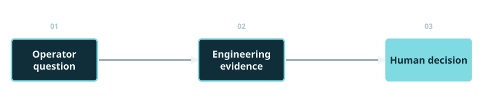
Completed teaching diagram.
Understand the workflow
Run the engineering tools
Challenge the recommendation
Begin with the operator's task rather than the software package. A recommendation becomes useful when someone can identify its inputs, inspect the calculation, and understand why it passed or failed a declared check. Ask the audience to keep one recurring question in mind: what evidence would change your decision? The workshop connects graph execution, engineering models, learned controllers, language-model responses, and human review. Each component has a different responsibility. We will use an illustrative graph first, then the existing numerical notebooks. The feeder study is a synthetic Greensboro example, not a live utility deployment. Reveal the three learning actions individually. Transition: an operator encounters three kinds of decisions, and the same evidence discipline must survive all three.
The mathematical task changes; the requirement for traceable evidence remains.
Operations discussed: Voltage support, Restoration, Cyber response.
Voltage: choose a continuous inverter command
Restoration: choose permitted paths and served loads
Cyber response: decide which measurements support control
Invite one short answer before revealing the three cases. Voltage support concerns continuous active and reactive control. Restoration includes discrete decisions and load priorities. Cyber response concerns the reliability of the information used to estimate and control a state. These are not three names for the same optimization problem. The tutorial therefore changes its numerical method while retaining a shared record and explicit verification. Keep the question grounded: an operator needs evidence for this candidate in this case, not a general claim that the language model is capable. Later results will include ties, rejected commands, and a model-scope mismatch. Transition: turn these practical needs into three things participants should be able to do at the end.
Discussion
What must an operator see before accepting any of these?
Expected observation: The exact candidate, declared model, checked limits, evidence age, and unresolved assumptions.
Explain the graph, reproduce a decision, and defend an acceptance or hold.
Trace state through every proposed stage
Match code, equations, outputs, and timing boundaries
Separate numerical benefit from workflow benefit
State the assessment criteria plainly. A successful participant can point to the node that produced a value, connect a displayed equation to the notebook operation, and explain the final review status. Do not equate the presence of several agents with improved control. The workflow might organize evidence better while producing the same command as a conventional program. Conversely, it might spend more time without improving either result. This is why we separate numerical quality, trace quality, and latency. The labs deliberately include an ordinary-Python baseline and matched engineering comparisons. Use the audience question to make a null numerical result scientifically useful. Transition: show when participants will learn each concept and when they will run it.
Discussion
If the final objective ties the baseline, what could still improve?
Expected observation: Inspectability or stale-evidence rejection may improve; those benefits need their own measurements.
Next: A three-hour route with experiments throughout
SLIDE 4 · F04
A three-hour route with experiments throughout
Each case follows concepts, an executable experiment, and an evidence-based discussion.
Block
Work at the keyboard
Foundations
G0–G5; L0–L1
Voltage
L2–L5; archived and optional live Llama
Restoration / cyber
L6–L9
Evidence / operator
L10–L12
0–40 min: foundations and graph lab
40–82 min: voltage; 82–92 min: break
92–149 min: restoration and cyber response
149–180 min: evaluation and operator capstone
The course is a single teaching sequence; the technical explanations and exercises are part of the lecture. Software installation is a prerequisite, not an activity to begin during the first exercise. Ask participants to open both notebooks now while keeping their current kernels separate. The graph notebook teaches orchestration with transparent arithmetic. The classroom notebook performs the engineering experiments and reads explicitly labeled archived language-model responses. A fresh calculation, a saved actual response, and a newly generated model response are different evidence modes. Preserve those labels when discussing speed or quality. The schedule reserves time for prediction and explanation rather than continuous lecturing. Transition: before opening the first code cell, identify what makes a workflow agentic.
A returned tool result can change the next permitted operation.
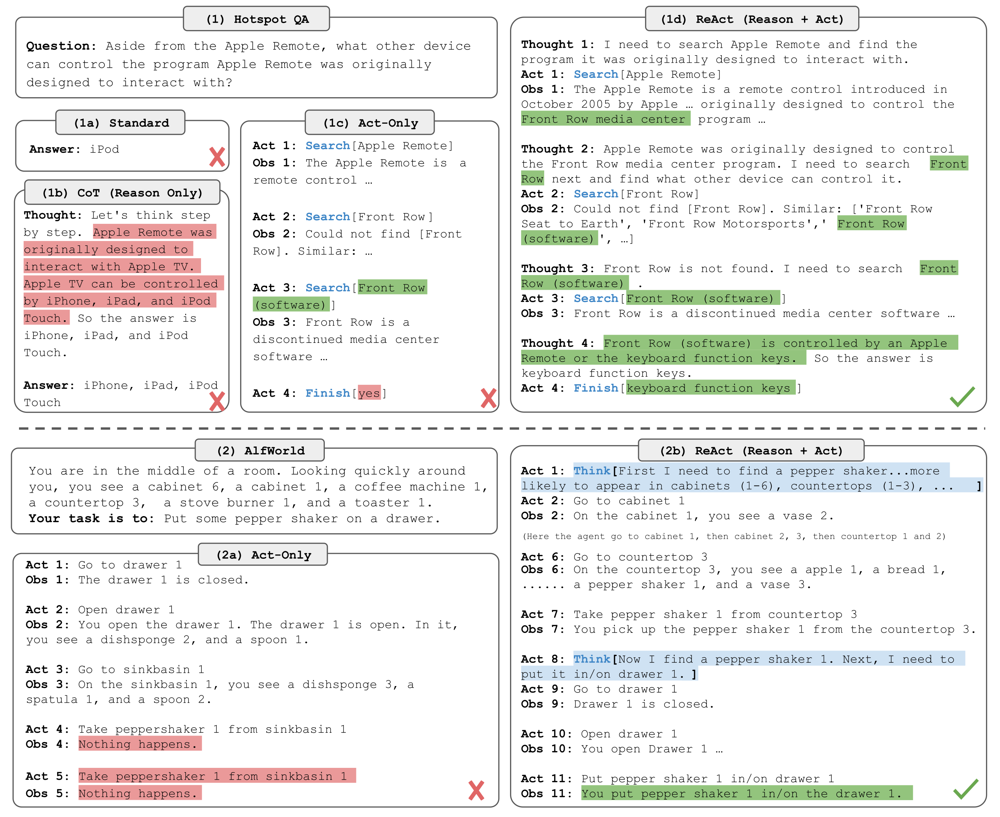
Yao et al. (ICLR 2023), ReAct Fig. 1, CC BY 4.0. Unchanged figure.
Observe the current evidence
Select an allowed operation
Read its result before continuing
Reveal the loop one action at a time. ReAct is an influential example of combining language-model deliberation with external actions and observations. Our teaching emphasis is the observable interface: what operation was requested, what result came back, and how the next decision used it. We do not need access to private model reasoning to inspect those steps. A predefined workflow follows known routes; an agent can choose among permitted operations using the current context. Real applications can mix both patterns. In this tutorial, deterministic routing and numerical limits constrain language-selected trials. A loop does not by itself establish reliability or intelligence. Transition: separate the component choosing an operation from the component calculating its result and the runtime coordinating both.
The useful loop is a decision updated by an observation.
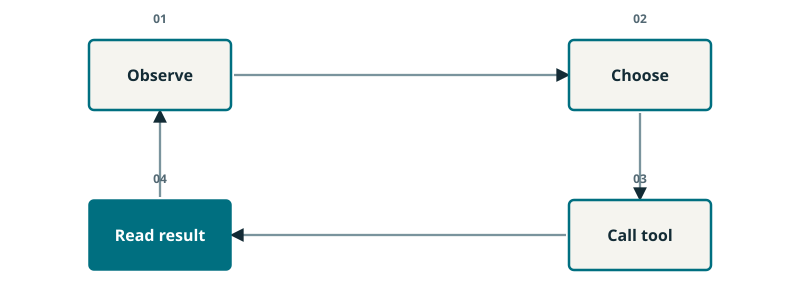
Completed teaching diagram.
A choice requests a bounded tool.
The tool returns external evidence.
New evidence can change the next choice.
This original teaching diagram adapts the interaction pattern explained by ReAct. It replaces the published question-answering example with four neutral operations. Start at the current observation, identify an allowed tool action, execute that action, and read the returned evidence before choosing again. The arrows show information flow. They do not guarantee that the next choice is correct. In the grid tutorial, a numerical verifier may reject the proposed action even when the language explanation sounds plausible. The animation highlights one operation at a time on the same slide. A deterministic retry budget and explicit exit conditions are introduced later, because an unbounded feedback loop can waste computation. Transition: separate the agent making a choice from the tool doing the calculation and the orchestrator enforcing the route.
Next: Tool, agent, orchestrator: three different jobs
SLIDE 7 · F06
Tool, agent, orchestrator: three different jobs
Roles describe responsibilities; they do not require different language-model backbones.
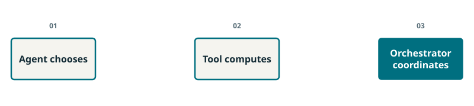
Completed teaching diagram.
Agent: chooses an allowed next operation
Tool: returns a specific calculation or record
Orchestrator: runs routes and stores state
Use a concrete voltage example. A planning role proposes a candidate, a power-flow tool evaluates it, and the runtime requires a verification step before the candidate is eligible for review. The same Llama model can support several role-specific prompts. Numerical functions can perform a role without calling any language model. This distinction prevents a common confusion: five boxes are not necessarily five independent models, five independent opinions, or five levels of protection. The responsibilities are useful because their input and output contracts can be inspected separately. The engineering tutorial implements its orchestration in custom Python; the graph lab introduces LangGraph mechanics separately. Transition: a tool becomes dependable only when its request and response are sufficiently explicit to check.
A result needs a candidate, units, model scope, and status.
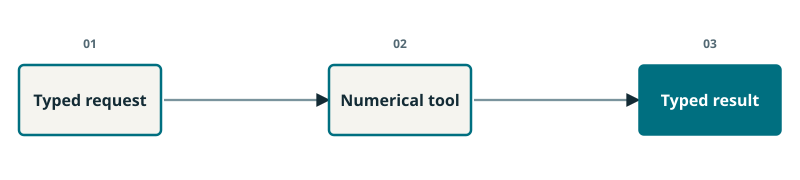
Completed teaching diagram.
Input: case, revision, command, and limits
Output: values, units, convergence, and evidence identity
Failure: explicit error or rejected result
Treat the tool contract like a laboratory measurement sheet. The number 112 is unusable until its unit, location, candidate, and calculation conditions are known. A solver may converge to a state that violates an operating limit. A request may be well formed yet refer to an outdated network. The contract makes these distinctions available to later nodes; it does not resolve them automatically. The tutorial records the candidate and declared context so that verification can inspect a particular calculation. Ask participants to identify which fields a current-limit check needs. Reveal the answer only after someone distinguishes convergence from feasibility. Transition: standardized tool communication can make these contracts reusable across software, but the engineering checks still belong to the application.
Discussion
Does “solver converged” mean the current limit passed?
Expected observation: No. Convergence and operating feasibility are separate checks.
A common tool interface helps integration; it does not certify the returned engineering result.
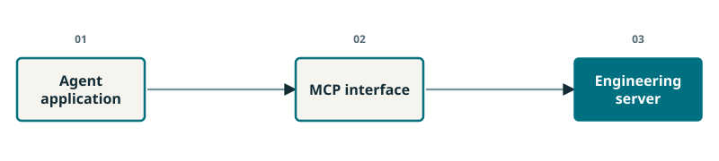
Completed teaching diagram.
Discover available tools
Submit structured arguments
Receive a structured result
Explain Model Context Protocol as an interface layer that exposes tools to an application. A consistent call format can reduce integration work when different engineering packages are involved. The diagram is architectural context, not a claim that our local classroom notebook uses an MCP server. Its functions are called directly in Python. This is a useful distinction between understanding an ecosystem and reproducing a specific implementation. Ask which part would still need to know whether 112 amperes exceeds the permitted rating. That comparison remains application logic using an agreed unit and limit. A transport protocol cannot supply a missing model assumption. Transition: now place the proposal's five responsibilities above the particular tool and transport choices.
Verification checks; optimization chooses the next trial
Operator review receives supported evidence
Use the animation to carry one candidate through all five proposed stages. Awareness establishes the case and interprets the request. Planning chooses a numerical formulation and produces a candidate. Simulation calculates modeled consequences. Verification checks the declared constraints and evidence consistency. The LLM optimizer proposes or selects permitted follow-up work, which must be evaluated again if it changes the action. Human review is the handoff after these responsibilities, not a replacement for a missing stage. All five are represented in the archived engineering trace later in the course. Some work is deterministic, some uses numerical optimization, and some uses model responses. Transition: identify which responsibility the language model can help with, and which remains a numerical calculation.
The language model coordinates bounded choices; numerical methods produce and check the physical evidence.
Responsibility
Returned artifact
Llama interpretation
Allowed operation + public explanation
Numerical method
Candidate + calculated values
Verifier
Pass/hold/reject + margins
Planning: MPC, restoration MILP, or estimation/control
Simulation: LinDistFlow, OpenDSS, or declared teaching model
Verification: explicit numerical and consistency checks
Selection: fixed rule, vote, or learned bandit
Avoid presenting the same algorithm as the natural solution to every case. Continuous voltage support suits the MPC and SAC comparison. Restoration uses a mixed-integer service-allocation formulation. The cyber teaching example combines estimation, anomaly evidence, and a constrained response. These methods are part of the workflow rather than competitors excluded by its design. The language model sees a bounded catalog of permitted operations and returns a choice with a public explanation. The explanation is checked against the numerical evidence; it is not treated as a proof. Learned response selection is a separate, discrete decision from SAC's continuous physical control. Transition: before reading the code, establish a visual vocabulary that clearly separates computation from the electrical network.
Workflow arrows represent dependencies, not electrical connections.
AAn operation or node
sThe current record
A→BB requires the result from A
r(s)A routing rule evaluated on state
Box A: an operation
Record s: current shared state
Arrow A → B: B needs A's result
Diamond r(s): choose the permitted next route
Point to each visual symbol as it appears. A node is a unit of work. State is the record that subsequent work reads. A directed edge identifies an allowed execution dependency. A routing rule chooses a successor based on the current record. Use the same symbol meanings when the diagram becomes code later. The letters here are computational names; they do not identify buses, currents, or physical switches. This matters because later restoration figures also contain nodes and edges, but those edges represent network connections. Ask the audience what an arrow from simulation to verification requires: the verification operation must have a result to inspect. Transition: begin with the simplest dependency structure, one with no path returning to its starting node.
A DAG encodes dependencies without a backward path.
G=(N,E),N={A,B,C,D}
GDependency graph
NSet of operations
ESet of directed prerequisite edges
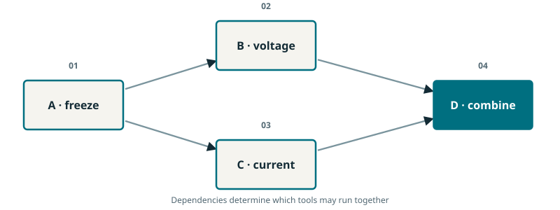
Completed teaching diagram.
A freezes the input
B and C inspect independent results
D combines both pieces of evidence
Build the diamond-shaped dependency diagram in place. The example freezes a candidate before checking its voltage and current evidence. The final operation needs both check results. Directed means arrows have an orientation; acyclic means no sequence of arrows returns to its starting operation. Define the node set and edge set without requiring graph theory background. The two middle checks are conceptual operations on already produced evidence. This picture does not claim that two OpenDSS engines run concurrently, and it does not describe the cyclic graph used in the G lab. Let the audience trace each prerequisite with a finger. Transition: more than one valid execution order can preserve the same arrows, which gives us a short prediction exercise.
The join must follow both prerequisites, whatever their order.
Operations discussed: A, B, C, D.
Order
Valid?
A → B → C → D
✓
A → C → B → D
✓
A → B → D → C
✗
A, B, C, D
A, C, B, D
A, B, D, C
Pause before revealing the validity marks. Ask participants to justify an answer by naming an edge, not by guessing the intended order. Both B and C depend on A, and D depends on both B and C. Therefore the middle operations may exchange positions, while the final operation cannot move ahead of either prerequisite. This is the meaning of a topological order. It describes a valid ordering, not a measured time or speedup. A real scheduler also has resource limits, tool state, and failure handling. If a participant proposes concurrent middle operations, acknowledge that dependencies permit it only when the implementation and resources permit it too. Transition: inspect what must be preserved when work actually branches and later rejoins.
Discussion
Which two orders are valid?
Expected observation: The first two. The third starts D before C has supplied its result.
Both branches must refer to the same frozen candidate and context.
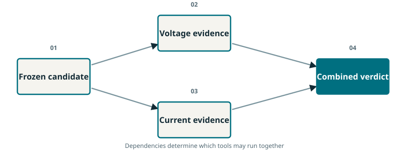
Completed teaching diagram.
Fan-out copies a consistent input
Each branch returns its own evidence
Join checks completeness and identity
Animate the same candidate identifier into both branches. Then change the identifier on one returned record conceptually and ask whether the results may still be combined. They may not establish a verdict for one common candidate. This is a simple way to teach stale or mismatched evidence without introducing complex concurrency machinery. Parallel execution can reduce elapsed time when work and resources are independent, but it can also create synchronization and merge problems. The tutorial's engineering runs should not be described as parallel simply because this diagram branches. Their timing boundary is measured separately. The visual teaches a design obligation: completeness and identity at the join. Transition: a failed verification adds another kind of edge, one that deliberately goes back for a revised calculation.
A finite retry budget bounds attempts; it does not guarantee a feasible command.
repair only if k<K
kCompleted repairs
KMaximum permitted repairs
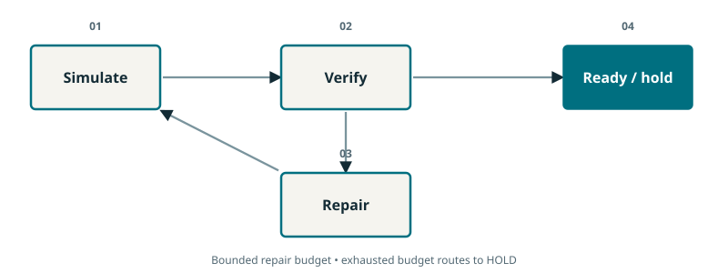
Completed teaching diagram.
Pass → ready for review
Fail with budget → repair and simulate again
Fail without budget → hold
Trace the success path first, then reveal the backward repair edge. Once that edge exists, the program graph is cyclic and should not be called a DAG. A finite individual execution can still be drawn as a sequence of visits. The two integer symbols count used and allowed repairs. The tutorial increments the counter when it modifies the command and sends that command back through simulation. A finite count guarantees that this policy eventually stops if its tool calls return; separate timeouts would be needed for a stalled tool. Holding is a valid outcome when no admissible command is found within the budget. Transition: the router needs both the latest verdict and the counter, so these values must live in shared state.
Next: State is the laboratory record carried forward
SLIDE 17 · F16
State is the laboratory record carried forward
A node reads state and returns explicit updates to the record.
st+1=merge(st,Δst)
stRecord before workflow step t
ΔstReturned field updates; not arithmetic subtraction
Candidate: command and context
Evidence: current, limit, and verdict
Control flow: attempts, budget, and status
Trace: the sequence of recorded events
Read the displayed record as a laboratory notebook with named fields. The command identifies what was proposed, the evidence fields identify what was calculated, and the control-flow fields identify what should happen next. The merge expression is a conceptual description of applying returned updates. Delta is not a numerical difference between two entire records. The G notebook uses TypedDict to describe expected keys and types, while its initial-state function explicitly validates numerical inputs. TypedDict itself does not perform runtime value checking. A chat transcript alone is not a substitute for this engineering record because important values and units must be easy to locate and compare. Transition: different fields need different rules when new information arrives.
Use the animation to replace the scalar value while visibly extending the event list. The current field describes the latest simulated command, so retaining the old value there would be misleading. The trace field describes history, so discarding earlier events would make the repair difficult to inspect. The example's plus symbol means list concatenation, not arithmetic averaging or consensus. In the code, Annotated attaches the addition function to the trace field. An empty appended list does not erase existing events. If several branches write a field, the application needs a merge rule appropriate to that field and its ordering semantics. Transition: after updating the record, one small routing function can choose among success, repair, and hold.
Discussion
Should a repaired command keep the previous current as its current result?
Expected observation: No. Replace the current result; preserve the previous event in the trace.
Verification computes the verdict; routing chooses what to do with it.
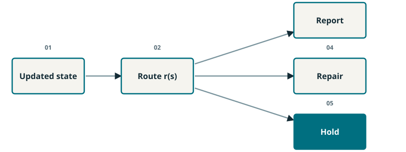
Completed teaching diagram.
passed = true → report
passed = false and k < K → repair
passed = false and k ≥ K → hold
Reveal the mutually exclusive conditions in order. The first condition checks whether the latest calculation passed. If it did not, the second decision is whether a repair is still permitted. The route returns a label, and the graph maps that label to a node. This policy is deliberately deterministic so that participants can reason about every execution path. A more flexible language-selected operation could be inserted elsewhere without allowing it to bypass these acceptance conditions. Ask what would happen if the counter were equal to the budget: the route must hold. The numerical verification rule and the orchestration policy remain separate functions. Transition: a report can itself pause for review, which requires saved execution state.
Next: Checkpoint: remember where the workflow stopped
SLIDE 20 · F19
Checkpoint: remember where the workflow stopped
A checkpoint associates execution state with a thread identifier.
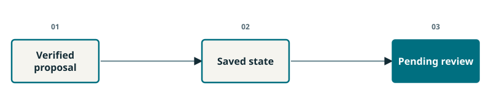
Completed teaching diagram.
Save the current record
Keep the next node
Resume the same execution context
Use a bookmark analogy, then make it precise with the stored record and pending node. In the G lab, a thread identifier associates the checkpoint with a particular execution. That identifier is not an operator credential. The example uses InMemorySaver, so the state remains available in the running process but does not provide durable recovery after the kernel disappears. This scope is sufficient for observing a pause and resume during class. Participants should inspect the snapshot before discussing its final status; otherwise a whole-cell execution can make the pause easy to miss. The upcoming exercise prints the pending node and acknowledgment flag. Transition: an interrupt exposes the question that a human or caller must answer before that execution can continue.
A review response must identify the recommendation it acknowledges.
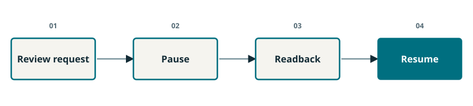
Completed teaching diagram.
Pause with candidate and evidence scope
Inspect before responding
Resume with an explicit matching response
Distinguish a visible recommendation from an acknowledged recommendation. The toy sends an interrupt payload that includes a recommendation identifier, command, calculated value, and declared scope. Its scripted reply must approve the same identifier. A wrong identifier or a declined response remains distinguishable from approval. This demonstrates a record-consistency mechanism, not operator authentication or equipment dispatch. On resumption, the interrupted node can begin again, so uncontrolled side effects before the interrupt would be a design problem. The toy only records state changes. Ask participants what the operator should see if the candidate changes while review is pending. The answer motivates fresh evidence and a new identity. Transition: organize these requirements into three checks that answer different questions.
Next: Typed, current, feasible: three separate claims
SLIDE 22 · F21
Typed, current, feasible: three separate claims
Passing one check does not establish the others.
Check
A pass does not prove
Schema ✓
Correct intent interpretation
Binding ✓
Source authenticity
Engineering ✓
Adequate model or field authorization
Schema: are required values valid?
Binding: is this result for this candidate?
Engineering: do modeled limits pass?
Keep this slide concrete rather than reading a compliance checklist. Give the current example verbally and ask for the verdict before revealing it. A converged solver result can fail a physical operating condition. A correctly shaped result can be stale. A matching hash can identify consistent data without proving who produced it. These checks are complementary because they answer different questions. Our later lab uses an explicitly illustrative payload to isolate the binding mechanism; participants must not mistake its passed field for a real feeder calculation. The final operator packet adds another distinction between evidence scope and the requested scope. Transition: ask what happens when a favorable language-model explanation conflicts with a failed numerical check.
Discussion
The solve converged at 112 A; the limit is 100 A. Verdict?
Expected observation: Reject that candidate under the declared current limit.
Use the fictional numbers as a fast diagnostic question. The source of a candidate and the number of models supporting it do not change its calculated current or the stated limit. The selected operation has earned a trial, not automatic acceptance. A failed trial should leave the previous admissible candidate available and should produce an inspectable rejection record. The later voltage experiment implements this separation between response selection and numerical evaluation. Multiple models may also share errors, so agreement does not establish independent evidence. This lesson is compatible with both conventional supervisors and agentic workflows. Transition: close the concept sequence by showing which existing research frameworks contribute related mechanisms, using qualified claims rather than a promotional ranking.
Discussion
Can a majority vote make this candidate acceptable?
Expected observation: No. Reject it, preserve the incumbent, and record the failed margin.
Reusable tool interfaces and workflows reduce integration effort across applications.
Completed teaching diagram.
PowerMCP exposes engineering tools
PowerWF organizes reusable workflows
Capabilities vary with the selected application
Present PowerAgent as a roadmap and ecosystem rather than one immutable controller. Its official materials organize domain capabilities through tools and reusable workflows. The teaching connection is our tool-contract slide: a clearly defined interface can make the same numerical capability usable from different applications. The diagram on this slide is a tutorial schematic of that concept, not a reproduced architecture figure. Do not infer an ecosystem-wide acceptance guarantee from the availability of a tool. In class, ask which fields an OpenDSS wrapper should return so that a different planner can still use its result. This turns a literature example into a design exercise. Transition: a connected collection of tools still needs protection against using them in an invalid order.
Check prerequisite tool writes within covered scope
One-shot advisory; repeated calls may proceed
PowerDAG combines exemplar retrieval with deterministic checks of selected tool prerequisites. Its inspected study reports 30 unseen queries, 50 expert exemplars, and 82 tools. Section IV-C2 describes a one-shot advisory: an initial covered violation is blocked, but repeating the call is permitted. This is not an unconditional hard safety gate. Relate the mechanism to our fan-out identity example while retaining that distinction. The cited figure exposes the paper architecture; our classroom code illustrates a narrower evidence-binding idea. Ask what our own application should require after the load changes: evidence associated with the new context. Our guard rejects stale binding explicitly. Transition: the next framework emphasizes what happens after a proposed physical change fails in a sandbox.
The inspected Grid-Agent version describes five roles and a sandbox workflow with validation and rollback. Its role names are Topology, Planner, Executor, Validator, and Summarizer. This is close prior art for splitting grid work among specialized responsibilities, so our teaching workflow should not claim to invent five-agent grid verification. The useful classroom question is whether a rejected candidate can accidentally become the retained command. Use the paper figure to locate the validation loop, then connect it to our separate incumbent and trial records. The v3 source recommends human oversight for deployment; it does not establish that every demonstrated action underwent authenticated operator approval. Transition: another architecture separates planning from coordination and domain-tool execution, which helps explain why state handoffs matter.
Next: X-GridAgent: separate planning, coordination, and action
SLIDE 27 · F26
X-GridAgent: separate planning, coordination, and action
A hierarchy helps organize work only when each handoff preserves the required context.
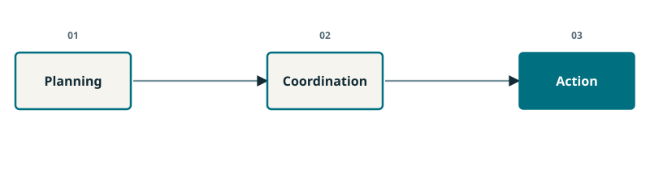
Completed teaching diagram.
Planning decomposes the requested analysis
Coordination routes and tracks tasks
Action selects domain tools and reads results
X-GridAgent organizes power-grid analysis in three layers and exposes domain capabilities through multiple tool servers. Its study uses 11 representative queries repeated 30 times, not 330 distinct tasks. The source also describes retrieval and prompt refinement. For our teaching purpose, focus on one mechanism: a plan needs coordination, and coordination needs an action interface that returns usable evidence. Ask which information must survive all three layers. The candidate, model scope, limits, and task identity are stronger answers than an unstructured summary alone. This slide is an independently drawn teaching schematic of the conceptual hierarchy; it is not an altered paper figure. Transition: compare these mechanisms compactly while preserving the qualifications hidden by a simple checkmark.
Cross-paper capability marks do not establish a common performance ranking.
Work
Tools
Feedback
Checks
Review
PowerAgent ecosystem
✓
✓
△
✓
PowerDAG
✓
✓
△
NR
Grid-Agent v3
✓
✓
✓
△
X-GridAgent
✓
✓
△
△
PowerAgentBench-SS
✓
✓
✓
△
Tutorial
✓
✓
✓
✓
Different tasks, models, budgets, and evaluation boundaries
Benchmark work evaluates agents; it is not a controller
Our benefit must be tested against matched baselines
Define the marks before interpreting the rows. A tick records a documented capability in the inspected source; a triangle preserves a qualification; NR means not reported in that source rather than proved absent. PowerAgent capabilities vary by workflow. PowerDAG covers selected dependencies with a one-shot advisory. Grid-Agent oversight is proposed for deployment. X-GridAgent includes solver checks and human prompt refinement. PowerAgentBench-SS supplies an evaluation protocol with hidden revalidation under a DC scope. The tutorial's review tick refers to local advisory readback, not authenticated field authorization. None of these rows forms a shared performance benchmark. Ask what would make a valid benefit claim: common scenarios, tools, budgets, outcome definitions, and timing boundaries. Transition: run a transparent graph and its ordinary-Python baseline before introducing electrical complexity.
Announce the switch from concepts to the first executable exercise. The response law is invented for teaching; it is not a feeder model, a power-flow approximation, an MPC controller, or a learned policy. Its simplicity lets participants predict each value and inspect every route. LangGraph execution is real, including the conditional edge, checkpoint, interrupt, and resume. The repair subtracts 0.25 from the command without allowing it below zero. The verification compares the resulting illustrative current with the declared limit. We will compare graph execution with a direct-Python loop using identical functions, so the experiment isolates orchestration. Transition: open the notebook and first establish which runtime is actually being used.
Next: G0: confirm the runtime and the experiment boundary
SLIDE 30 · F29 · G0
G0: confirm the runtime and the experiment boundary
Record the installed versions before interpreting the execution.
Exact excerpt: Graph_Workflow_Lab.ipynb, G0, lines 5–13. Run the complete cell in context.
os.environ["LANGSMITH_TRACING"] = "false"
os.environ["LANGCHAIN_TRACING_V2"] = "false"
from langgraph.graph import StateGraph, START, END
from langgraph.checkpoint.memory import InMemorySaver
from langgraph.types import interrupt, Command
from src.graph_workflow_lab import initial_state, recommendation_id, summary
versions = {name: version(name) for name in ("langgraph", "langgraph-checkpoint", "langchain-core")}
print(versions)
print("Rule-driven toy graph. No LLM, network call or electrical-model validation.")
Imports the real LangGraph runtime
Disables external tracing in this lab
Prints versions and the toy scope
Run the complete G0 cell, even though the slide displays only its relevant lines. Confirm that the version dictionary appears before proceeding. The captured run used LangGraph 1.2.15, checkpoint 4.3.0, and langchain-core 1.6.12; a participant's environment may differ. The cell disables the external tracing flags used by this exercise and declares that no language-model or electrical-model validation occurs. After dependencies are installed, the toy needs no Ollama service. If imports fail, use the supplied graph-lab requirements and return to the documented setup rather than changing the experiment during class. This practical boundary keeps the graph lesson reproducible. Transition: define the record that every subsequent node will read and update.
The schema names fields; the trace annotation selects its merge rule.
Exact excerpt: Graph_Workflow_Lab.ipynb, G1, lines 1–10. Run the complete cell in context.
class TrialState(TypedDict):
command: float
limit: float
attempts: int
max_repairs: int
current: float
passed: bool
status: str
acknowledged: bool
trace: Annotated[list[str], add]
command and limit describe the trial
attempts and max_repairs bound retries
Annotated[list[str], add] preserves events
Highlight the control fields first, then the verdict fields, then the trace annotation. Run the complete G1 cell so the audience also sees the initial validated state and the list-addition example below this excerpt. TypedDict states the intended record structure; initial_state performs the example's explicit input validation. These two mechanisms should not be confused. The trace is a sequence of recorded events, not an internal chain of thought and not a cryptographically authenticated audit log. Ask participants to predict the number of trace entries before revealing the answer. This is the same replace-versus-append idea they saw conceptually. Transition: the first node uses the command to calculate a value, and the next node compares it with the limit.
Discussion
After simulate and verify append one event each, how many remain?
Expected observation: Two events; the list-addition reducer keeps both.
Read the first function as an ordinary Python calculation. It returns current and a trace update rather than reconstructing the entire state record. The next function compares that current with the limit using a small numerical tolerance. The tolerance addresses floating-point comparison in this toy; it is not an engineering margin. With command 0.75, the result is 1.00 and the limit is 0.80, so the verdict is false. That outcome is expected rather than a program error. Ask which returned field the router will inspect. Run the entire G2 cell, including the repair and terminal-node definitions that follow this excerpt. Transition: inspect the four lines that convert the verdict and budget into a route.
Discussion
For u = 0.75 and L = 0.80, does verification pass?
Expected observation: i = 1.00, so the first verification fails.
A successful test reports; a failed test repairs only while budget remains.
Exact excerpt: Graph_Workflow_Lab.ipynb, G2, lines 19–22. Run the complete cell in context.
def route(s):
if s["passed"]:
return "report"
return "repair" if s["attempts"] < s["max_repairs"] else "hold"
Read passed first
Otherwise compare attempts with max_repairs
Return one permitted node label
Map each code branch to the earlier route diagram. The successful branch returns report. The failed branch compares the completed repair count with the maximum and returns either repair or hold. Because the same functions will be supplied to the direct-Python baseline, any numerical difference would indicate an implementation issue rather than a more intelligent graph. Ask what happens after one repair when the maximum is one and the verification still fails. The answer is hold, since equality means the budget is exhausted. A recursion limit also appears at invocation, but that runtime limit is not the application repair policy. Transition: node functions and route labels still need connections before they form an executable graph.
Run G3 and confirm the compiled node list. Highlight the fixed edge from simulate to verify, the conditional edge that calls route, and the edge returning repair to simulate. The mapping translates a returned label into a permitted successor. The report and hold nodes terminate this version of the execution. Compilation checks structural requirements of the graph; it is not a proof that the chosen response law describes a feeder or that the repair rule finds an optimum. This keeps the software lesson separate from the later numerical science. Ask a participant to point to the line that makes the graph cyclic. Transition: now test three starting states whose outcomes the class can calculate by hand.
Give participants time to predict before running. The first case passes immediately. The second begins at current 1.00, reduces the command from 0.75 to 0.50, and then reaches current 0.80. The third begins at command 0.90, repairs to 0.65, and still exceeds its 0.50 limit with current 0.92. Its single repair is exhausted, so hold is correct. Run G4 unchanged because its assertions describe these original three cases. For a new limit or repair budget, invoke the graph in a separate scratch cell. A useful extension gives the third case four repairs: it reaches command zero and current 0.40. Transition: compare the graph's outputs with the same functions in an ordinary Python supervisor.
Experiment / prediction
Which case reaches the repair node but still must hold?
Expected observation: The third: u becomes 0.65, giving i = 0.92 > 0.50.
Next: G4: the conventional baseline produces the same result
SLIDE 36 · F35 · G4
G4: the conventional baseline produces the same result
The graph matches all three commands, outcomes, and traces.
Exact excerpt: Graph_Workflow_Lab.ipynb, G4, lines 15–19. Run the complete cell in context.
from src.graph_workflow_lab import fixed_baseline
for name, args in cases.items():
baseline = fixed_baseline(initial_state(*args), simulate, verify, repair, route, ready, hold)
assert summary(baseline) == summary(results[name])
print("Direct Python baseline matches every command, outcome and trace: 3/3.")
Same simulation and verification functions
Same repair rule and stopping policy
3/3 outcomes and event histories match
Make the null numerical result a central teaching outcome. Both implementations receive the same initial state and the same node functions. The comparison asserts equality of the summary, including the command, status, and trace. Therefore the graph should not be credited with finding a better action. Its value here is making execution structure and later checkpoint mechanisms explicit. The notebook prints elapsed times from one local execution, but those values are not a statistically controlled performance benchmark. Differences at this scale depend on runtime and measurement overhead. Ask which separate experiment would support an inspectability or recovery claim. Transition: introduce the graph feature that the direct calculation alone does not yet demonstrate, a real pause with resumable review state.
Discussion
What did the graph add in this experiment?
Expected observation: An explicit execution structure and reusable pause/state mechanisms; it did not improve the toy command.
The full G5 cell both pauses and supplies a scripted response, so explain how to observe the intermediate state. For a live teaching pause, execute lines 1 through 17 first, retaining the function definition above this displayed excerpt. Inspect the printed pending node, which is report, and the false acknowledgment flag. The interrupt payload identifies the command and the invented model scope. In the captured pause, the stored status remains TOY_NEW; it should not be mislabeled TOY_READY merely because the numerical gate passed. The checkpoint exists in this kernel's memory. Participants can now see that a verified numerical result and an acknowledged recommendation are different states. Transition: resume the same execution with an explicit response tied to its recommendation identifier.
Execute the remaining lines after the pause, or inspect both printed stages if participants ran the full cell. The response is explicitly simulated and generated by the notebook, not provided by an authenticated operator. Its identifier must match the recommendation constructed from the saved state. The resumed graph records acknowledgment and has no pending node. To discuss rejection, point to the human_review function: it requires an approval value of true and the correct identifier; otherwise it returns hold. Avoid resuming an already completed execution for this experiment; create a fresh review run before trying a different response. No equipment endpoint is present. Transition: even a correctly matched review becomes insufficient if its underlying request or candidate has changed.
Discussion
What should a declined or wrong-identifier response produce?
Expected observation: TOY_HOLD, with acknowledgment false.
Allow four minutes for setup, prediction, execution, and explanation. The initial request uses load scale 1.00, rating fraction 0.80, and revision one. L1 changes the load to 1.10 and revision to two, then separately tests a changed command. The expected binding results are true, false, and false. The payload is deliberately marked example_only; this is an evidence-identity experiment, not a fresh feeder solve. A matching hash establishes consistency among these recorded inputs and the bound result. It does not establish source authenticity, correct intent, or physical feasibility. Fixed supervisors can use the same guard, so the test demonstrates an implementable workflow property without claiming an exclusive LLM benefit. Transition: now choose numerical methods that can produce a meaningful physical candidate.
Next: Model-based and model-free methods enter the same workflow
SLIDE 40 · F39
Model-based and model-free methods enter the same workflow
MPC and SAC are candidate generators that still face a common verifier.
u0:H−1mink=0∑H−1ℓ(xk,uk)ut=πθ(ot)
H,kPlanning horizon and predicted step
xk,uk,ℓState, control, and declared stage cost
ot,πθObservation and learned policy with parameters θ
tcurrent decision time
Model-based: optimize predicted behavior
Model-free: learn an action rule from experience
Voltage lab: MPC planning and saved SAC inference
PPO is discussed as an alternative, not trained here
Define the two broad approaches before naming the particular algorithms. Model-based control uses predicted behavior in an optimization problem; the displayed expression omits constraints for clarity, and the voltage lesson supplies them explicitly. Model-free learning trains an action rule through experience and rewards. It may obtain that experience from a simulator, so model-free does not mean no simulator was used. MPC plans over a horizon and applies its first action. SAC supplies continuous control from saved learned weights in class. PPO is a relevant continuous-action alternative but is not trained in this tutorial. Training cost and inference cost are separate. Both proposed commands must be simulated and checked under the same declared limits. Transition: leave the illustrative graph and establish a fair experiment on the selected feeder models.
Next: The graph is ready; now ask a physical question
SLIDE 41 · F40
The graph is ready; now ask a physical question
Compare the same scenario, constraints, budget, and evidence boundary.
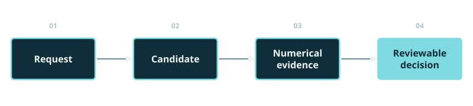
Completed teaching diagram.
MPC and SAC propose inverter commands
LinDistFlow and OpenDSS expose model-scope differences
Llama proposes bounded follow-up work
Measure objective, rejected checks, and added time
Recap the transferable mechanisms in one sentence: state records the case, tools return evidence, routes handle success and repair, and review records a response to a particular recommendation. The G lab established those mechanisms but did not establish grid-control performance. The engineering notebook now switches to actual numerical models and recorded model responses. Keep the comparison fair by fixing the scenario, permitted controls, declared constraints, objective, and candidate budget wherever a paired comparison is claimed. Report changes in model scope explicitly rather than treating them as unexplained error. The next section introduces the electrical meaning of active and reactive control before displaying the optimization. Transition: begin voltage support with the feeder, the action variables, and the operating limits an operator actually cares about.
Discussion
What can a favorable explanation never substitute for?
Expected observation: A fresh calculation and passing checks for the actual candidate and declared model scope.
Next: One feeder. Two controls. One checked recommendation.
Voltage support
SLIDE 42 · V01
One feeder. Two controls. One checked recommendation.
Start with an operating request whose physical scope is explicit.
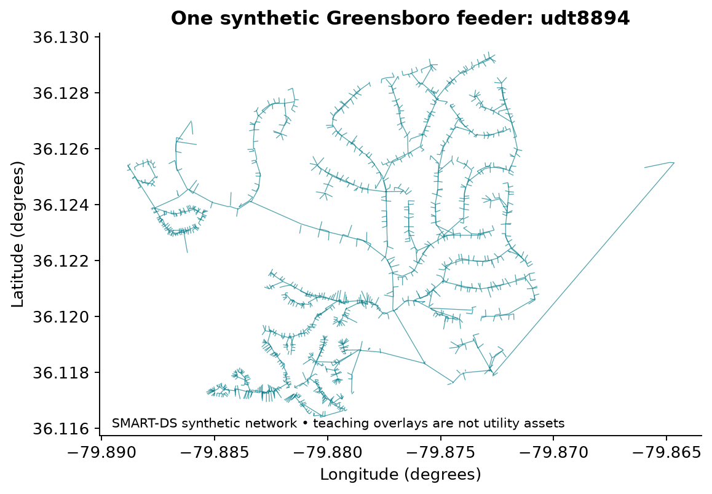
SMART-DS synthetic Greensboro feeder uhs20_1247–udt8894. One selected feeder; no live utility deployment.
Use available PV
Respect voltage and current limits
Keep the operator in the decision loop
The voltage chapter uses one SMART-DS synthetic Greensboro feeder, identified as uhs20_1247–udt8894. It is not a model of the whole city or a live utility. Ask learners which information they still need before advising an operator: device availability, thermal ratings, voltage bounds, model coverage and permitted actions. The map establishes geographic context; it does not establish operational validity. Our numerical experiment uses a fleet command with two continuous variables. All recommendations remain advisory simulation outputs. This chapter moves from a familiar control problem to the reason for explicit agent handoffs: a recommendation should carry the evidence and assumptions that justify it.
Discussion
What must the operator know before accepting a new inverter setting?
Every stage returns an inspectable result, even without an LLM call.
Completed teaching diagram.
Awareness → validated request
Planning → MPC and SAC proposals
Simulation and verification → checked evidence
LLM optimizer → bounded next trial
Animate the stage path in order and keep the final loop visible. Awareness validates the operating request. Planning obtains model-based MPC and model-free SAC proposals. Simulation evaluates their physical consequences with a selected model. Verification checks numerical limits and binds the evidence to the request and candidate. The LLM optimizer can select a permitted refinement; a changed action must return to simulation and verification. A final recommendation is passed to the operator. These responsibilities are distinct from calling a language model five times. Deterministic numerical stages are essential parts of the agentic workflow. Ask participants to predict which stages must repeat if the reactive-power command changes.
Connect the request object to the earlier tool-contract lesson. The load multiplier describes the scenario; the rating fraction sets a thermal condition; the backend specifies the numerical model. These are engineering inputs, not values that a language model may silently choose. A revision distinguishes a changed operating condition from the previous request. The classroom validator checks required fields and allowed values before numerical work begins. This does not authenticate a sensor or prove that the inputs represent the actual feeder. The returned contract is a clear starting point for later checks. Ask learners to identify one field that would require a new simulation if it changed.
Discussion
Does validating a request prove that its measurements are true?
Expected observation: No. Schema validity, provenance and physical truth are different properties.
SAC: infer with a trained continuous-action policy
PPO: another continuous-action option, discussed only
Both: return the proposed command for checking
Explain model-based and model-free before naming algorithms. MPC uses a prediction model while solving the current decision. SAC learns a policy from interaction and produces an action from an observation at inference time. A model-free policy may still have been trained in a simulator; the overall workflow certainly still uses engineering models for verification. SAC is the trained actor executed here. PPO is a relevant alternative, not a second trained result in this tutorial. The same request and acceptance limits apply to both proposals. A fast policy call is useful only if its physical outcome and total workflow cost are also acceptable. This motivates the common candidate contract.
A horizon informs the current action; new observations trigger replanning.
Completed teaching diagram.
Observe the present state
Optimize a sequence over H steps
Test and apply only the first command
Update the forecast and solve again
Build the timeline one element at a time. The central concept is repeated optimization using new information, rather than executing an entire old plan without revision. The generic MPC framework can contain dynamics and long horizons. This tutorial implements H=3 quasi-static power-flow snapshots, linked by a penalty on command movement. It returns the first proposed control for a fresh check. It does not demonstrate transient stability or a complete closed-loop field rollout. Ask learners why a new forecast could change the later controls and why only the first control is considered now. The next slide formalizes these ideas without hiding the difference between general MPC and the implemented approximation.
ℓ,f,gStage cost, prediction model, constraint function
Minimize discounted stage costs
Enforce the prediction model
Keep every planned step inside constraints
First read the symbols aloud. State x_k summarizes the system at step k, u_k is a proposed control and d_k is forecast demand. The stage cost ell encodes preferences, while g represents constraints that preferences cannot waive. The displayed dynamic relation is the standard general formulation. Our implementation specializes it to algebraic power-flow snapshots, a three-step horizon and movement coupling between controls. The discount factor is 0.98. There is no terminal invariant-set construction or closed-loop stability theorem in this teaching example. Have learners point to the part of the equation that would change if the forecast changes, then to the part that enforces a device rating.
Next: Two numbers specify the inverter fleet command
SLIDE 48 · V07
Two numbers specify the inverter fleet command
Define units and signs before interpreting any numerical result.
u=(a,b),pi=aSi,qi=bSi
uTwo-number fleet command
a,bDimensionless active and signed reactive participation
SiInverter i apparent-power rating, kVA
pi,qiActive kW and reactive kvar commands
a sets active participation
b sets signed reactive participation
Negative b means reactive absorption
Every inverter retains its own rating
The tutorial uses a reduced fleet control rather than thousands of independently optimized inverter setpoints. For inverter i, S_i is the apparent-power rating and the dimensionless pair a,b scales active and reactive commands. Here the available active capability follows the adapter's declared teaching assumption. The negative sign convention for b corresponds to reactive absorption. Learners should not infer the sign from a plot without reading this contract. Ask what happens to each device when a increases by 0.0025. The physical change is proportional to that device's rating. This shared two-number interface lets MPC, SAC and a bounded language-selected refinement propose directly comparable controls.
Reveal the cost one term at a time and ask learners to name the engineering preference represented by each term. The first term discourages curtailment under the declared availability assumption. The second discourages reactive effort. The third measures mean squared voltage deviation over the modeled bus-phase set. The fourth penalizes command movement. All weights are teaching design choices, not universal operating preferences. Reducing the magnitude of b certainly reduces the reactive-effort term, but can alter voltages, movement and feasibility. The objective is evaluated for the current step in the reported comparisons. A better objective alone establishes neither stability nor a safe recommendation outside the modeled contract.
Discussion
Does reducing reactive effort necessarily reduce the total cost?
Expected observation: No. The voltage and movement terms can change.
Neither a low cost nor a majority vote can waive a limit.
Vmin≤∣Vi∣≤Vmax,∣Ie∣≤Iemax,a2+b2≤1,0≤a≤1
ViBus-phase voltage, p.u.
Ie,IemaxBranch current and allowed current, A
a,bNormalized active and reactive command
Network: voltage and current bounds
Devices: inverter capability and action bounds
Evidence: finite values and completed solve
Identity: matching request, command and model
Draw the inverter capability circle while revealing the network bounds. The circle follows from the apparent-power limit after dividing by the squared rating. The planner uses local sensitivities and a conservative capability polygon; the final proposal still returns to a numerical model for checking. Distinguish a solver returning normally, a good cost and a feasible candidate. These are separate observations. Evidence validity also requires matching case, candidate and model identifiers, so results from a previous setting cannot be attached to a new one. Ask whether three language models agreeing can make a branch overcurrent acceptable. The answer locates the engineering gate above preference selection.
Discussion
Can three agreeing LLMs turn an overcurrent into PASS?
Same action can pass one contract and fail another
Changed coverage prevents an accuracy-only comparison
Keep two model cards visible while adding their coverage. Python LinDistFlow3 implements a coupled three-phase linear approximation on the MV network. Its ideal aggregation does not expose LV voltages or transformer thermal constraints. OpenDSS solves the supplied unbalanced MV/LV power-flow model. Both are useful for their declared purpose, but their PASS labels answer different questions. This experiment changes both model equations and coverage. It therefore cannot isolate a pure approximation-error effect. Even the voltage term in the objective is aggregated over different modeled sets. Ask learners which additional limits could fail when the same command is sent to the broader model.
The linear relation still contains mutual impedance between phases.
wj=wi−2Re[β⊙(Zij(β⊙Sij))]
wi,wjParent and child squared phase voltages, V²
Zij,SijCoupled impedance Ω; downstream phase powers VA
βNominal phase ratios (1, e⁻ʲ²π/³, e⁻ʲ⁴π/³)
⋅,⊙,ReConjugate, entrywise product, real part
Propagate squared voltages down the radial feeder
Use phase impedance matrices
Assume nominal phase-angle ratios
Report losses diagnostically; omit them from branch balance
Start from the parent and child buses, then reveal the voltage-drop term. The equation matches the fixed phase-ratio closure used by the Python adapter. The matrix Z contains mutual phase coupling, so this is not a single-phase equivalent. The beta vector encodes nominal phase relationships, overbars denote complex conjugation, the circle-like multiplication symbol means entrywise multiplication and Re extracts the real component. Branch powers are in VA and squared voltages in volts squared. The imaginary unit in the exponent is distinct from a bus index. Currents use fixed source-reference phasors at 1.03 p.u.; small-loss assumptions are not certified error bounds. The full limitations remain in the handout.
A reward penalty is not a proof of constraint satisfaction.
πmaxE[t≥0∑γt{r(st,ut)+αH(π(⋅∣st))}]
st,utObservation and continuous action
π,rActor policy and task reward
H,αPolicy entropy and exploration weight
γReward discount factor
E,tExpectation over policy trajectories; discrete training step
Actor maps observations to continuous actions
Reward evaluates the task outcome
Entropy encourages exploration during learning
The frozen actor still needs fresh verification
Use this equation to explain the purpose of SAC rather than derive every update rule. The actor is a probability distribution over continuous actions. The task reward expresses operational preferences and penalties, while entropy encourages broader exploration during training. Alpha controls that tradeoff and gamma discounts future rewards. Training and inference are different phases: the classroom loads saved weights and computes a new action for the current observation. It does not retrain the policy. Even a strong reward penalty for violations can leave unsafe actions under distribution shift. This is why the actor is a candidate generator within the workflow, followed by simulation and a hard acceptance gate.
Next: Read the training provenance, not only the actor output
SLIDE 54 · V13
Read the training provenance, not only the actor output
Training cost and inference cost belong to different measurements.
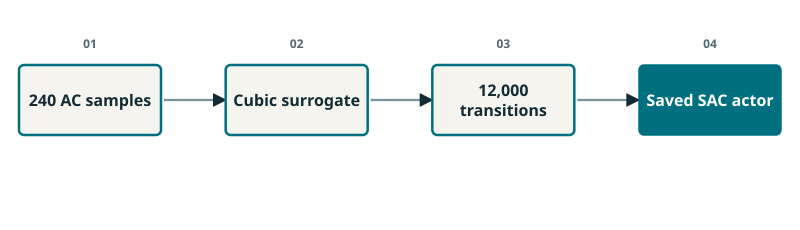
Completed teaching diagram.
240 AC solves fit a cubic surrogate
48 separate samples evaluate the surrogate fit
12,000 policy-training transitions use that surrogate
L2 performs new inference with saved weights
Animate a pipeline from AC samples to surrogate fitting to policy training to the saved actor. The 12,000 transitions are not 12,000 OpenDSS solves. This distinction matters for reproducibility and for reporting computational cost. The fit-validation samples assess the surrogate, not all aspects of policy robustness. New classroom scenarios can alter demand or current-rating conditions, creating a transfer problem for the frozen actor. A quick inference time therefore says little about total development cost or reliability under shift. Ask learners what evidence they would request before trusting the actor beyond this fixture. Possible answers include separate policy test cases, out-of-distribution conditions, constraint failures and an appropriate deterministic baseline.
Next: L2: the code changes a scenario, then recomputes
SLIDE 55 · V14 · L2
L2: the code changes a scenario, then recomputes
One cell solves MPC, infers SAC and checks both candidates.
Exact excerpt: Classroom_Labs.ipynb, L2, lines 1–7. Run the complete cell in context.
LOAD_SCALE = 1.0
RATING_FRACTION = 0.80
started = time.perf_counter()
voltage = lab.voltage_lab(LOAD_SCALE, RATING_FRACTION)
timings['L2 fresh MPC + SAC + checks'] = time.perf_counter() - started
print(voltage['mode'])
display(voltage['table'])
Change one scenario parameter
Call the shared experiment helper
Time the whole numerical operation
Inspect the returned comparison table
Walk through the exact first seven lines of L2. LOAD_SCALE and RATING_FRACTION are the two visible scenario controls. The helper performs a fresh MPC calculation, new saved-actor inference and new numerical checks. The timer encloses the helper call, so it measures more than policy inference alone. The returned table is the place to compare feasibility and cost before looking at the plot. Keep the original default outputs as a reference, then make one change at a time. The later L3 response pool belongs to a different archived original context; rerunning L2 does not regenerate those LLM responses. This boundary must stay explicit during the exercise.
Discussion
Which output would show that a faster proposal was unusable?
Next: Lab: predict, change demand, explain the outcome
SLIDE 56 · V15 · L2
Lab: predict, change demand, explain the outcome
Change one assumption and support your conclusion with a metric.
Exact excerpt: Classroom_Labs.ipynb, L2, lines 1–4. Run the complete cell in context.
LOAD_SCALE = 1.0
RATING_FRACTION = 0.80
started = time.perf_counter()
voltage = lab.voltage_lab(LOAD_SCALE, RATING_FRACTION)
Predict before running
Run L2 at the default load
Change LOAD_SCALE once and rerun L2
Record feasibility, objective and the limiting margin
Allow seven minutes and keep this slide visible while participants work. One learner predicts and one operates the notebook, then they exchange roles. First record the default results. Next choose a modest changed load multiplier and predict how PV participation, reactive support or curtailment might respond. Run the full L2 cell and compare the same acceptance metrics. Students should explain a result using a numerical margin rather than a general claim about AI. If setup fails, use the executed notebook output to complete the prediction and interpretation tasks. Do not modify unrelated cells or imply that the archived LLM pool has changed. Finish by collecting one surprising observation from the room.
Experiment / prediction
At higher demand, will PV curtailment necessarily increase?
Expected observation: Not necessarily. Local voltage and current constraints can move in different directions.
A feasible action can still be much worse on the declared objective.
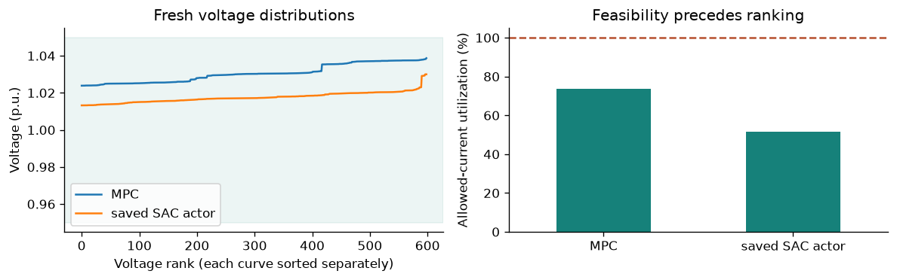
Executed L2 default: fresh MPC solve, saved SAC actor inference and reduced-model checks. Sorted curves are voltage ranks.
MPC objective: 0.031104
SAC objective: 0.436428
Both pass the reduced-model gate in this default case
Voltage curves are separately sorted distributions
Use the actual executed L2 figure. The displayed default costs are rounded for teaching: MPC is approximately 0.031104 and SAC 0.436428, with both feasible under the reduced-model contract. The voltage curves are sorted separately, so matching positions are ranks rather than the same physical bus. The current-utilization plot reports the most heavily used allowed current bound. Ask participants to identify the evidence for feasibility before comparing objective values. A cost gap here is a controller result, not automatically an advantage of the multi-agent architecture. Students with changed load settings should report their own values and avoid mixing them with this original reference output.
Discussion
Does the lower objective identify which stage caused the improvement?
Recorded model output is evidence to inspect, not a fresh measurement.
Exact excerpt: Classroom_Labs.ipynb, L3, lines 1–8. Run the complete cell in context.
pool = lab.saved_pool('test_01')
display(pd.DataFrame(pool['responses'])[['model_id', 'operation_id', 'reason', 'seconds', 'source']])
display(pd.DataFrame([{'operation': ', '.join(c['operation_ids']),
'votes': c['vote_count'], 'share': c['vote_share'], 'parameters': c['operation']['parameters']}
for c in pool['pool']['candidates']]))
print('ARCHIVED ACTUAL LLM; original context:', pool['context']['id'])
print('Distinct physical candidates:', len(pool['pool']['candidates']))
print('Malformed/duplicate votes rejected:', len(pool['pool']['rejected']))
Load original test_01
Display model, operation, reason and recorded seconds
Count distinct physical candidates
Keep this context separate from modified L2
Explain why this cell is reproducible without contacting a local model. It loads an archived response pool from original test_01, displays each exact public response and reports how the structured proposals were canonicalized. The seconds column contains recorded call durations, not the time required to print the table. The original test context is not identical to L2's default rating fraction, and certainly not to a student-modified L2 scenario. This cell therefore teaches inspection and evidence attribution. It does not supply new context-matched recommendations for the latest classroom perturbation. Ask learners to find a claim in a reason that is supported by the numeric evidence and one that still requires testing.
Next: Three replies produce two different physical trials
SLIDE 59 · V18
Three replies produce two different physical trials
A persuasive explanation can contain an unsupported engineering claim.
Recorded model
Selected operation
Call time
Llama 3.1 8B
Increase a by 0.0025
1.867 s
Llama 3.2 3B
Reduce |b| by 10%
0.905 s
Qwen 2.5 7B
Reduce |b| by 10%
1.844 s
Llama 3.1 8B: increase a by 0.0025 · 1.867 s
Llama 3.2 3B: reduce |b| by 10% · 0.905 s
Qwen 2.5 7B: reduce |b| by 10% · 1.844 s
Steady-state tests do not establish voltage stability
These times and choices come from the recorded response-selection pilot. Llama 3.1 suggested increasing active participation to reduce curtailment. Llama 3.2 described reducing reactive effort and also mentioned reducing curtailment, a causal connection that its text alone does not establish. Qwen used the phrase voltage stability, which is unsupported by these steady-state tests. Present the excerpts as public rationales, not access to private model reasoning. Llama names the model family; Ollama is the local runtime that served it. Have the audience annotate the difference between a permitted operation and a justified physical claim. The next step converts prose-backed choices into reproducible physical candidates.
Discussion
Qwen wrote “may help improve voltage stability.” What evidence supports that?
Expected observation: These steady-state tests do not establish voltage stability.
Voting selects the next trial; verification controls whether it is retained.
Completed teaching diagram.
Parse structured tool and parameter fields
Deduplicate identical physical commands
Count votes with a fixed tie rule
Simulate and verify the selected trial
Animate three response cards merging into two physical-candidate cards. Two different descriptions of the same command must not count as two distinct control actions. Canonical identifiers depend on the tool and parameters rather than rhetorical style. In original test_01, two models propose the same reactive reduction and one proposes a PV increase, so the majority chooses the reactive trial. A predetermined hash tie-break makes ties reproducible; it is not an engineering preference. Agreement is also not a calibrated safety probability because models can share mistaken assumptions. A changed command returns to the numerical stages. Ask what should happen if the majority-selected trial fails a current constraint.
Discussion
What happens if the majority trial fails?
Expected observation: Reject that trial; retain a valid incumbent or escalate.
s,aEvidence context and canonical operation; a is not inverter participation here
ϕ,θContext-operation features and learned coefficients
A,βFeature-information matrix and exploration weight
q,a∗Training selection score and highest-scoring permitted operation
Features combine context and candidate operation
Training score includes an exploration bonus
Feedback updates the linear reward model
Frozen evaluation uses predicted reward only
Explain select, observe and update before revealing the formula. The feature vector represents the known context and a canonical operation, including vote-related information. Theta stores learned reward coefficients; A stores regularized feature information. During training, beta controls an uncertainty bonus. After a trial, selected feedback updates the reward model. The classroom evaluation freezes these parameters and uses predicted reward only, with no test updates. All candidate LLM responses have already been generated, so their call costs are paid by every pool selector. This is a contextual bandit, a simple reinforcement-learning setting, rather than training the language models or adapting a full sequential control policy online.
Jinc,JtrialIncumbent and trial current-step costs
24 training, 8 validation, 12 test contexts
Five training orders; selected feedback only
Frozen validation and test: zero updates
The 0.01 trial charge is not seconds
Read the reward in two branches. A passing trial can earn a bounded improvement reward relative to the incumbent cost, with a fixed trial charge. A rejected trial receives a negative reward. The 0.01 scaling and charge are design choices; the charge does not measure latency. Training consumes selected outcomes, although the audit records contain other outcomes for comparisons. Validation and test are frozen, avoiding feedback leakage. Five training orders reuse the same training contexts and are not five independent datasets. Ask learners how changing reward scaling might change selection without changing any electrical operating limit. This separates learning preferences from the hard verification contract.
Next: L4: test the frozen choice, not the predicted reward
SLIDE 63 · V22 · L4
L4: test the frozen choice, not the predicted reward
The selected action must earn a new numerical result.
Exact excerpt: Classroom_Labs.ipynb, L4, lines 1–8. Run the complete cell in context.
decision = pool['selection']
print('Frozen:', pool['frozen'], '| selected-feedback training updates:', pool['training_updates'])
print('Bandit operation:', decision.operation_id, '| predicted reward:', round(decision.predicted_reward, 4))
print('Same canonical choice as majority:', decision.candidate_id == pool['vote_id'])
started = time.perf_counter()
selected_trials = lab.trial_saved_selection(pool)
timings['L4 new verification of archived choices'] = time.perf_counter() - started
display(selected_trials['table'])
Run L4
Compare the learner choice with the majority vote
Inspect fresh feasibility and cost
Explain what happens after a failed trial
Read the exact L4 code, then give participants three minutes. The stored selector chooses an operation using its frozen parameters. The numerical helper evaluates the selected trial again under the archived original context. The displayed predicted reward is a learned estimate, while the returned trial table contains newly calculated outcomes. Participants should check whether the canonical candidate matches the majority choice and whether it passes the engineering gate. In this recorded test, the learner and majority agree on reactive reduction. Do not subtract this cost from a modified L2 cost, because those are different contexts. Ask which outcome controls the recommendation if a predicted improvement conflicts with failed verification.
Experiment / prediction
Predicted reward is positive, but the current limit fails. Accept?
Expected observation: Reject. The gate takes precedence over reward prediction.
Next: A useful experiment can find no learned advantage
SLIDE 64 · V23
A useful experiment can find no learned advantage
Compare extra agents with a strong, inexpensive deterministic supervisor.
MV held-out method
Mean J
Full-feeder AC PASS
Fixed refinement
0.03400656
0 / 12
Majority vote
0.03398479
0 / 12
Frozen learner
0.03398479
0 / 12
Fixed refinement mean J: 0.03400656
Vote and learned selector mean J: 0.03398479
Vote and learner tie on every held-out case
A posthoc fixed Q-reduction rule reproduces their choices
Present this result without framing a tiny cost change as general superiority. The majority vote and frozen learner tie on all twelve held-out MV cases. A simple posthoc rule that always selects the reactive reduction reproduces those choices without language-model calls. Because that rule was identified after inspecting results, label it a diagnostic rather than a predeclared baseline. The experiment demonstrates that bounded proposals, fresh verification and reproducible traces can be implemented. It does not demonstrate that additional LLMs or a learned selector are necessary for better control. Ask what new test set or task distribution would make the learner's contribution more convincing than the simpler supervisor.
Discussion
Which ablation would test whether language-model calls are necessary?
Fast actor inference does not imply a fast end-to-end recommendation.
MV held-out method
Accounted serial time
Fixed refinement
3.327 s
Frozen learner with response pool
8.119 s
Fixed-refinement accounted serial time: 3.327 s
Learned-selection accounted serial time: 8.119 s
All pool selectors pay for all three model calls
Separate setup, inference, simulation and verification
The two reported times are reconstructed serial accounting from actual recorded components in the held-out pilot. They are not a guaranteed deployment response time and should not be confused with a new classroom timing measurement. Pool-based selectors share the cost of generating the three responses. The learned selector's small scoring operation is only one component of that total. Cold model loading, prompt processing, token generation and numerical checking can have very different scaling. Ask learners to draw the boundary around the quantity they want to compare. The engineering question is whether any incremental benefit justifies the additional decision latency under the intended operator workflow.
Discussion
What would change if the local model had to load from disk?
Next: L5: audit the same action, then replan separately
SLIDE 66 · V25 · L5
L5: audit the same action, then replan separately
Cross-model auditing and replanning answer different questions.
Exact excerpt: Classroom_Labs.ipynb, L5, lines 1–6. Run the complete cell in context.
started = time.perf_counter()
scope_audit = lab.backend_audit(pool, run_opendss=RUN_OPENDSS)
timings['L5 selected model scope checks'] = time.perf_counter() - started
display(scope_audit['table'])
print(scope_audit['optional_mode'])
print('An MV-only PASS cannot acknowledge a request requiring full MV/LV coverage.')
Default: fresh MV check
Optional: same-action full-feeder OpenDSS audit
Optional: separate MPC solve using the AC backend
Keep the frozen selector unchanged
Read the helper call before enabling its optional path. The same-action audit asks whether an existing recommendation survives a broader physical model. The separate AC MPC solve asks what command a planner using that broader model would propose. Mixing those questions can make model coverage look like an LLM improvement. The default classroom execution performs the MV check; enabling RUN_OPENDSS in L0 requests the fresh AC audit and separate AC replanning in L5. The saved learner remains frozen. OpenDSS computations should be performed sequentially because the local engine has shared mutable state. Compare the status, limiting quantities and model scope rather than treating cross-model costs as an exact solver ranking.
Next: Broader coverage reveals a missing constraint boundary
SLIDE 67 · V26
Broader coverage reveals a missing constraint boundary
The reduced-model PASS does not satisfy a full-feeder request.
Final learned-workflow actions
Selected-model gate
Full-feeder AC audit
MV planning
12 / 12
0 / 12
OpenDSS planning
12 / 12
12 / 12
MV-planned actions: 12/12 pass the MV gate
Same actions: 0/12 pass the full-feeder AC audit
AC-planned final actions: 12/12 pass their AC gate
Human operating approval remains pending
The table summarizes the separately recorded twelve paired scenarios, not the output of one L5 cell. The reduced model accepts all twelve final actions under its own scope, yet their same-action full-feeder audits fail. Planning with the AC backend returns actions that pass the full-feeder snapshot contract in these scenarios. The result is caused by the broader model and constraint coverage, with the selector still frozen. It cannot be attributed to more convincing Llama explanations. Within the AC pilot, the learned selector also does not establish superiority over fixed or uniform selection. Ask learners how a responsible operator packet should describe an MV-only recommendation when full MV/LV coverage was requested.
Discussion
Which component supplied the extra physical information?
Expected observation: The broader numerical model and its acceptance contract.
Next: Verification returns reasons, not just a green badge
SLIDE 68 · V27
Verification returns reasons, not just a green badge
A rejected recommendation should explain the failing contract.
Recompute the exact selected action
Check voltage, current and capability limits
Bind results to the request and candidate
Return PASS, rejection reasons and model scope
Return to verification after the cross-model result has made its purpose concrete. A bare boolean cannot explain whether a command failed because of overcurrent, incomplete data, wrong scope or stale evidence. The verifier should retain the numerical metrics, checked bounds and request-candidate identity alongside its decision. The classroom uses hash binding as a consistency mechanism, not as sensor authentication or a proof of truthful computation. The exact selected action receives a final check before handoff. Ask learners what changes when an operator edits only one setpoint: the old evidence is no longer the evidence for that command. This motivates a fresh check rather than simply updating the displayed label.
Discussion
Which fields would you want beside a rejected recommendation?
Next: Voltage support: keep the benefit claim precise
SLIDE 69 · V28
Voltage support: keep the benefit claim precise
The workflow exposes assumptions and failures; better control must be measured.
Completed teaching diagram.
Awareness: validated scenario
Planning: MPC and SAC candidate controls
Simulation and verification: scope-specific physical evidence
Optimizer and operator: bounded refinement, review and readback
Close the voltage chapter with the complete path and the actual findings. The numerical controllers supplied proposed settings. The language models supplied bounded refinement choices and public explanations. Voting and frozen learned selection tied in the held-out MV pilot. Broader-model checking revealed that the reduced-model recommendations did not meet the requested full-feeder scope. These are valuable workflow lessons without a claim of universal agentic control superiority. The operator must see the command, scenario, evidence, failed checks, remaining assumptions and required scope. Readback remains advisory and does not dispatch equipment. Invite one participant to name a demonstrated benefit and another to name a limitation, then take the scheduled ten-minute break before restoration.
Discussion
Name one demonstrated workflow benefit and one unproven performance claim.
Next we change the decision from continuous inverter control to discrete restoration.
Save the voltage experiment.
Return with one model-mismatch question.
Take the scheduled ten-minute break. Participants should save their notebook and record whether the LinDistFlow candidate passed each model. At the restart, ask one participant to explain why the same physical action can pass an aggregated model and fail a more detailed model. This prepares the distinction between proposing a candidate and establishing its admissibility. The next chapter introduces discrete restoration decisions and a priority-weighted objective.
Next: After the fault, decide what can be reconnected
Restoration
SLIDE 71 · R01
After the fault, decide what can be reconnected
Restoration chooses topology and load pickup under operating constraints.
Completed teaching diagram. Exact six-node classroom transport graph; dashed ties are options, not a solved switching plan.
One faulted edge is unavailable
Two possible ties reconnect downstream buses
Critical and ordinary loads compete for capacity
Resume after the break with the six-node restoration drawing. This transparent graph is a separate teaching fixture rather than a reduced claim about the Greensboro feeder. Node zero is the source; edge 1–2 is faulted and unavailable. The original loads are 40, 60, 70, 50 and 30 kW at nodes one through five, with nodes two and five assigned critical priority. One optional tie has a 100 kW capacity; the other has the capacity swept in the exercise. Reveal the ties only after participants locate the fault. Ask which loads might be served without assuming every energized bus must pick up its own load.
Discussion
Can an energized bus transmit power while its local load stays disconnected?
Expected observation: Yes. Bus energization and load pickup are separate decisions.
Next: Three binary decisions describe one restoration plan
SLIDE 72 · R02
Three binary decisions describe one restoration plan
Separate pickup, energization and switch closure.
siBinary load pickup
yiBinary energized bus
zeBinary closed edge
sᵢ: pick up load i
yᵢ: energize bus i
zₑ: close edge e
A fault exclusion is a hard constraint
Use the same network drawing and highlight a transit bus. A bus may be energized to carry power to another load while its own demand is not picked up. This requires separate binary variables s and y. A line is closed only if its endpoint buses are energized, and the faulted edge is forced open. These logical distinctions prevent an apparently good service total from describing an impossible path. Awareness supplies the isolated fault, permitted ties, capacities and documented priorities. It does not invent permission to operate equipment. Ask learners to translate the transit-bus example into s_i=0 and y_i=1 before revealing the objective on the next slide.
si,yi,zijBinary pickup, energized bus and closed edge
Maximize weighted served demand
Critical weights are 10; other weights are 1
Use unit weights for the total-service baseline
Report both critical and total served kW
Reveal demand, priority and pickup separately in the objective. Demand d_i is nominal active power, w_i is a documented service priority and s_i decides whether that demand is picked up. Assigning a weight of ten to critical loads changes the optimization policy; an improvement in critical service is therefore not evidence that a language model outperformed a numerical optimizer. A finite weight also does not guarantee lexicographic critical-first service for every possible network. A strict priority requirement should be implemented through staged optimization or a verified primary-objective constraint. The notebook reports both total and critical service so that the audience can see the tradeoff rather than only a single weighted score.
An attractive pickup list still needs a feasible source path.
e∑AiePe=disi(i=0),−Peze≤Pe≤Peze
AieSigned node-edge incidence entry
PeActive branch flow, kW
PeBranch capacity, kW
i=0Source bus
Balance active power at each non-source bus
Limit flow by the closed edge capacity
An open edge carries no power
The source supplies the served demand
Walk through one path from source zero to a picked-up load. The incidence matrix assigns a sign to each branch at each bus. The balance equation ensures that the net incoming active power equals served demand. The capacity condition forces zero flow on an open edge and limits the magnitude of flow on a closed edge. Signed P allows either direction according to the chosen orientation. This is an active-power transport formulation, not a full AC power-flow model. It omits voltage and reactive power so that the discrete restoration logic is visible. Before a physical switching recommendation, those omitted constraints and equipment permissions would require their own checks.
Next: Radiality needs connectivity as well as an edge count
SLIDE 75 · R05
Radiality needs connectivity as well as an edge count
A tree equation alone does not exclude a disconnected island.
e∑Aiefe=yi(i=0),∣fe∣≤5ze,e∑ze=i∑yi−1
feFictitious connectivity flow, not electrical power
5Maximum number of energized non-source buses
∑ze=∑yi−1Tree edge count, used together with connectivity
Send one fictitious unit to each energized non-source bus
Allow that commodity only on closed edges
Combine connectivity with the tree edge count
The commodity is a proof device, not electricity
Draw a disconnected cycle as a counterexample to relying on edge count alone. The model sends a fictitious commodity from the source to each energized non-source bus. Its balance makes a source path necessary; its bounds allow travel only on closed edges. Together with the tree edge count, this certifies a connected radial energized graph in this formulation. There are at most five non-source energized buses, which explains the bound five in the teaching model. This commodity is separate from the electrical power flow P. Ask learners why the source must supply the commodity even though only non-source equations are displayed. The distinction prepares them to read a MILP implementation without confusing graph constraints and physics.
Next: Compare objectives on the same feasible network
SLIDE 76 · R06
Compare objectives on the same feasible network
Hold the fault, capacities and constraints fixed.
Property
Total-service baseline
Priority policy
Same fault and capacities
✓
✓
Same feasible network
✓
✓
Objective
Total kW
Weighted kW
Exact method
Enumeration
MILP + enumeration
Unweighted baseline: maximize total served kW
Priority policy: maximize weighted served demand
Both: identical physical and logical constraints
Report exact solutions and independent agreement
The classroom baseline is deliberately stronger than an arbitrary greedy order. It exactly maximizes total service over the same feasible graph used by the priority-weighted problem. The baseline is solved by exhaustive enumeration; the weighted problem uses HiGHS MILP and an independent enumeration check. Different algorithms are acceptable here because both solve the same declared finite feasible sets exactly. The comparison isolates the objective policy rather than a solver-quality effect. Report both total and critical demand served. Ask what would make the comparison unfair: granting one method a different tie, relaxing its fault exclusion, changing its loads or silently assigning extra numerical search budget.
Discussion
If critical service improves after changing weights, what caused that change?
Expected observation: The documented objective policy, unless another controlled experiment shows otherwise.
Next: The planner returns a topology plus a pickup decision
SLIDE 77 · R07
The planner returns a topology plus a pickup decision
Use the method that fits the decision type.
Completed teaching diagram.
Solve the weighted binary restoration problem
Preserve the best weighted service in a second solve
Minimize energized edges, then apply a small tie-break
Return decisions and solver evidence
Explain why a mixed-integer model is a natural method for on/off topology and load-pickup choices. The first solve maximizes weighted service. A secondary solve preserves that primary optimum, then minimizes energized branch count with a small edge-index tie-break. That secondary quantity is not the number of switching operations relative to an initial topology. If a real restoration policy needs operation counts or crew timing, those variables must be modeled explicitly. MPC could extend this into a rolling multi-period mixed-integer formulation, while a learned policy could propose candidates. Neither extension is executed in this classroom cell. The tutorial keeps the exact standard method and uses orchestration to manage its inputs and evidence.
Read the five displayed lines as an experiment definition. The capacity tuple identifies five distinct test conditions. The helper solves each one and returns a table containing the objective-policy comparison and independent agreement checks. The measured operation includes the sweep and enumeration, so it is not a single MILP-solve latency. Reusing a previous solution after changing capacity would miss the very effect being studied. Students should save their prediction before running and then inspect the pickup and closed-edge details if a service value is surprising. The final assertion in the full cell checks agreement with exhaustive enumeration for all sampled conditions, giving a direct small-system correctness check.
Give pairs eight minutes. One participant follows the source path on the network diagram while the other checks capacities and pickup variables in the notebook. Begin with the stated capacity points, then add a tighter point to the tuple and rerun the full cell. Avoid assuming that a twenty-percent capacity reduction causes a twenty-percent service reduction: indivisible pickup and alternative paths create thresholds and flat regions. Learners should compare objective values and feasibility when equivalent topologies tie rather than insisting on identical edge identifiers. If a result appears counterintuitive, trace each served load to source zero and verify every branch capacity. End with a short explanation of one plateau.
Experiment / prediction
Will total service vary smoothly as tie capacity changes?
Expected observation: No. Binary load pickup creates thresholds and plateaus.
Priority can reduce total kW while preserving critical kW
Flat regions reflect discrete choices
The plot is generated from the executed classroom sweep. Its markers are discrete solved conditions, not samples of a validated continuous response curve. Weighted and unweighted objectives may select different load combinations, so one policy can restore fewer total kilowatts while restoring more critical kilowatts. Coincident markers show equal outcomes at those conditions. Use the graph to connect the optimization equation with a visible operating consequence. Ask learners to identify one capacity at which reporting total service alone would hide the policy difference. Then ask which field in the operator request justifies the chosen priority. The graph demonstrates the consequences of documented priorities, not an inherent advantage of using an LLM.
Next: Case A: 40 kW capacity makes priorities visible
SLIDE 81 · R11
Case A: 40 kW capacity makes priorities visible
The best total-service plan need not restore the most critical demand.
40 kW tie case
Total served
Critical served
Unweighted baseline
140 kW
30 kW
Priority-weighted policy
130 kW
90 kW
Weighted policy: 130 kW total
Weighted policy: 90 kW critical
Unweighted baseline: 140 kW total
Unweighted baseline: 30 kW critical
At the 40 kW swept tie capacity, the priority-weighted solution serves 130 kW in total, including all 90 kW labeled critical in this teaching graph. The unweighted exact baseline serves 140 kW total but only 30 kW critical. These values come from the same feasible network under different objective weights. The ten-kilowatt total-service difference is the price of this particular policy choice in this scenario. It should be shown openly rather than hidden in a weighted score. Ask participants which result matches an instruction to prioritize critical loads, and what additional policy clarification would be necessary if priorities were strict rather than finite weights.
Discussion
Which plan is better if the operator's instruction changes?
Next: Case B: more capacity can leave service unchanged
SLIDE 82 · R12
Case B: more capacity can leave service unchanged
The next available load may need more capacity than the increment supplies.
At 80 kW: weighted service is 200 kW
At 100 kW: weighted service remains 200 kW
Both serve 90 kW critical demand
Inspect discrete pickup and the binding path
The weighted solution serves 200 kW total and 90 kW critical at both the 80 and 100 kW swept capacities in the default graph. This plateau makes a useful second case because it prevents a simplistic linear interpretation of capacity improvements. A new indivisible load may not fit the remaining capacity, and another path or constraint may still bind. Have learners inspect the chosen pickup set and closed edges before proposing a causal explanation. The graph alone shows the plateau but does not identify every active constraint. Ask whether splitting a load into controllable blocks would change the problem. It would change the feasible decision set and require a new declared model.
Discussion
Why can a 20 kW rating increase restore no additional load?
Expected observation: The next discrete pickup may remain infeasible, or another constraint still binds.
Next: Simulation and verification check different properties
SLIDE 83 · R13
Simulation and verification check different properties
A candidate topology needs recomputation and an independent contract check.
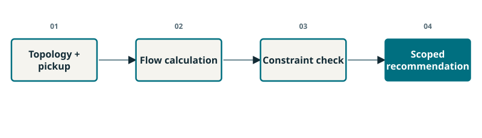
Completed teaching diagram.
Simulation: compute flows for the chosen topology
Verification: capacity, fault exclusion and source connectivity
Independent check: enumeration agrees with the MILP
Scope: no AC voltages or switching chronology
Separate the outputs of simulation and verification on the same topology. Simulation calculates the modeled consequences of the candidate. Verification decides whether those consequences and the discrete decisions satisfy the contract. Independent enumeration checks the optimizer's result on this small finite fixture; it does not add AC constraints that the model omitted. The six-node classroom problem includes active-power transport, connectivity and radiality but no voltage, reactive power, relay coordination or time-ordered switching. A real operator must not mistake that scope for a complete switching plan. Ask learners which omitted property would matter before energizing equipment and where its result would enter the workflow.
Run the full L7 cell after L6. It takes the first weighted restoration result, binds the request and candidate to its evidence, and then changes the capacity to 20 kW with a new revision. The original consistency test succeeds; the changed request with old evidence fails. This is a controlled demonstration of stale-evidence rejection. The hash mechanism does not prove that a simulator was correct or that input data were authentic. It establishes that the evidence record belongs to a different declared request. Ask participants to describe the appropriate operator-visible response in plain language: the earlier recommendation must be held while a new constrained solve is obtained.
Experiment / prediction
Can we keep the old green status after lowering the rating?
Expected observation: No. The changed contract requires new evidence.
Next: Inspect all five stages in a recorded feeder run
SLIDE 85 · R15 · L10
Inspect all five stages in a recorded feeder run
The live MILP lab and the recorded feeder catalog are separate experiments.
Exact excerpt: Classroom_Labs.ipynb, L10, lines 16–23. Run the complete cell in context.
from IPython.display import HTML
for case, backend in [('voltage', 'lindistflow3'), ('restoration', 'lindistflow3'), ('cyber_stealth', 'dc')]:
full_trace = lab.archived_stage_table(lab.archived_stage_replies(case, backend))
assert full_trace.stage.nunique() == 5
display(HTML('<details open><summary>ARCHIVED ACTUAL: ' + case +
' — all five stages, every recorded event</summary>' +
full_trace.drop(columns='role_group').to_html(index=False, escape=True) + '</details>'))
print('Selected returned fields are exact archive values; complete records: results/proposal_complete_workflow.json')
Awareness: fault isolation and equipment permissions
Planning: bounded catalog candidates
Simulation and verification: power flow and thermal rejection
LLM optimizer: permitted shedding refinement
Make the change of experiment explicit before presenting language responses. L6 and L7 are fresh calculations on a six-node graph. L10 also exposes an archived five-stage feeder workflow using a small synthetic bypass-and-shedding catalog. That archive is not the same MILP experiment. Its awareness record includes a 100 A short bypass, a forbidden long bypass, artificial critical-load labels and no PV dispatch. The planner generates bounded initial catalog candidates. Simulation records physical metrics, and verification rejects the initial high-pickup candidate for thermal failure. The optimizer may request a permitted catalog refinement. Every changed candidate returns to simulation and verification before ranking and operator handoff.
Next: A recorded Llama ranking needs numerical scrutiny
SLIDE 86 · R16
A recorded Llama ranking needs numerical scrutiny
Explanations are reviewable claims, not substitutes for sorting verified scores.
Planning: GENERATE_CANDIDATES · 0.874 s
Refinement: SHED_075 · 1.259 s
Later ranking lists E02 before E03
Recorded costs: −5509.13524 versus −6109.97130
The archived restoration planner asked for both initial simulations within the contract. After a thermal failure, the optimizer selected SHED_075, meaning disconnection of 75 percent of an ordered set of noncritical load objects, not 75 percent of their kilowatts. The later public ranking says lower scores are better yet lists E02 ahead of the lower-cost E03. That mismatch is a concrete reason to keep deterministic verified-score ranking separate from prose. The final numerical selection retains the lower valid cost. Ask learners to explain why negative restoration costs reverse a casual intuition about larger numbers. The recorded call durations are examples from that run, not classroom print times or universal latency benchmarks.
Discussion
Which is lower: −5509 or −6110?
Expected observation: −6110. The verified numeric objective should control the ranking.
Next: The feeder comparison ties on restored service
SLIDE 87 · R17
The feeder comparison ties on restored service
Traceability is demonstrated; extra restored load from Llama is not.
Archived MV feeder route
Total service
Critical service
Recorded time
Fixed supervisor
1843.614 kW
474.040 kW
0.306 s
Llama supervisor
1843.614 kW
474.040 kW
5.232 s
Fixed and Llama routes: 1843.614 kW total served
Both: 474.040 kW critical served
Fixed route: 0.306 s; Llama route: 5.232 s
Same selected shedding operation and final model checks
These are recorded end-to-end times for the MV feeder-catalog experiment. Both routes use the same candidate budget and select the same SHED_075 operation, producing the same final service objective. The Llama route makes four language calls and takes about 5.232 seconds, while the fixed route takes about 0.306 seconds. This is one matched scenario, not a statistical latency benchmark or a field deployment. Its value is that the intermediate actions, failed thermal check, public language claims and final evidence are inspectable. Do not use the result to claim additional restored load from agentic AI. A stronger research study would test varied faults, unseen topology conditions and equal computational budgets.
Discussion
Which benefit is supported here: more service or a reviewable workflow?
Conclude restoration with the operator's perspective. The plan packet should show isolated faults, permitted operations, selected pickup, modeled constraints, fresh evidence and any missing checks. It must not present the synthetic snapshot as a verified switching sequence. The stale-evidence exercise solved one problem: using a result for the wrong declared request. It did not solve the deeper problem of untrustworthy measurements inside a correctly identified record. Use this distinction to transition to cyber response. Ask learners whether a well-formed, freshly computed and internally consistent report could still describe the wrong physical state. The next controlled four-bus experiment demonstrates exactly that failure boundary.
Discussion
Could fresh, correctly identified evidence still be physically misleading?
Expected observation: Yes. Its measurements or model assumptions may be wrong.
Next: A controller acts on an estimate, not on hidden truth
Cyber response
SLIDE 89 · C01
A controller acts on an estimate, not on hidden truth
Start with the information available to the operator.
Operations discussed: Physical state, Measurements, State estimate, Control proposal.
Four-bus DC teaching system
Three unknown non-reference voltage angles
Eight flow, injection and angle measurements
Two corruption patterns; one controlled experiment
Introduce the data path from physical state to measurements to estimator to controller. The four-bus fixture is separate from the Greensboro feeder and is designed to expose a detector limitation clearly. Its unknown state contains three non-reference voltage angles, while eight measurements provide redundancy. The experimenter knows the simulated true state for evaluation, but the agent's operating gate does not receive that truth. Two numerical corruption patterns are compared: one isolated sensor bias and a coordinated pattern consistent with the same linear model. The objective is to understand information limits and safe handling of uncertainty. Ask which quantities an operator can observe directly and which are inferred.
Discussion
Does a precise-looking state estimate guarantee an accurate state?
Next: WLS combines measurements using their uncertainty
SLIDE 90 · C02
WLS combines measurements using their uncertainty
A model and covariance turn measurements into an estimate.
z=Hx+ϵ,ϵ∼N(0,R),x^=argxmin(z−Hx)⊤R−1(z−Hx)
x,x^True and estimated non-reference angles, rad; dimension 3
z,HEight measurements and the linear measurement matrix
ϵ,RMeasurement noise and its covariance
H maps angles to expected measurements
R weights sensors in their own units
The estimate minimizes weighted mismatch
Observability requires sufficient independent information
Read the measurement relation before the minimization. The state vector x contains three angles in radians. The vector z contains eight sensor readings with potentially different physical units. H maps angles to expected measurements, and covariance R accounts for their assumed uncertainty. A measurement with lower variance receives greater influence after proper weighting. Full column rank is required to identify all state directions in this linear fixture. In numerical code, use a stable weighted least-squares solve rather than treating an explicit matrix inverse as the preferred implementation. Ask learners why simply averaging all measurement errors would be inappropriate when flow, injection and angle channels have different scales and uncertainties.
Next: A residual tests consistency with assumptions
SLIDE 91 · C03
A residual tests consistency with assumptions
No alarm means no detected inconsistency under the stated model.
r=z−Hx^,J=r⊤R−1r,J>χ5,0.992=15.0863⇒alarm
rMeasurement residual
JDimensionless residual energy
χ5,0.99299th percentile with 5 residual degrees of freedom
Residual: unexplained measurement mismatch
Weighted energy J is dimensionless
Eight measurements minus three states gives five degrees
99% threshold: 15.0863
Define the residual as what the estimated state cannot explain. Its covariance-weighted energy J is compared with a chi-squared threshold under the assumed linear model and Gaussian noise. Here the residual has five degrees of freedom because there are eight measurements and three observable state variables. The 0.99 quantile is approximately 15.0863. The nominal one-percent false-alarm level depends on the model, noise and rank assumptions; it is not a measured field false-alarm rate. An exceedance indicates inconsistency, not malicious intent or the identity of a compromised sensor. Ask the audience to finish the sentence: no residual alarm means no inconsistency was detected by this test, not that the state is true.
Discussion
Does an alarm establish that the cause was malicious?
Expected observation: No. Model error, noise assumptions and ordinary sensor faults can also cause inconsistency.
An isolated error often leaves a residual signature.
Change one sensor channel
Leave the other channels unchanged
Re-estimate the state
Inspect the weighted mismatch
Use the isolated corruption as a familiar reference before the coordinated case. Adding bias to one measurement can create a disagreement that the remaining redundant channels cannot explain. As the bias grows, residual energy tends to increase in this chosen fixture. Avoid turning that observation into a claim that every isolated attack is detectable or that any alarm proves an attack. Detection depends on the measurement arrangement, uncertainty, bias direction and magnitude. The later lab computes the result rather than assuming it. Ask learners to predict which curve should rise first: the residual statistic or the state-estimation error. Both can change, but they measure different aspects of the outcome.
Discussion
Which other measurements could contradict the biased sensor?
Next: Case B: shift measurements along a modeled direction
SLIDE 93 · C05
Case B: shift measurements along a modeled direction
A structured perturbation can look like a different physical state.
a=Hc,z′=z+a=z+Hc
cChosen state displacement, rad
aCoordinated measurement perturbation
z′Perturbed measurement vector
Choose a state displacement c
Map it into measurement space using H
Add that pattern to the measurements
Use the unchanged estimator model
Introduce c as a hypothetical state displacement and a as a measurement-space perturbation. The construction a=Hc is a mathematical teaching case: the added measurement pattern is exactly one that the assumed linear model can explain. It requires knowledge of the relevant model and the ability to alter the required channels. Those conditions are important limits, not details to hide. The purpose is to test the detector's information boundary in a controlled fixture, rather than claim every real system permits this pattern. Ask learners what state estimate would explain z plus Hc if the original estimate explained z. Their prediction leads directly to the cancellation on the next slide.
Discussion
What estimated state would explain the added Hc term?
The estimate can move while the residual stays unchanged.
r′=z′−Hx^′=z+Hc−H(x^+c)=z−Hx^=r
x^′=x^+cShifted estimate under the same full-rank linear WLS model
r′=rExactly unchanged residual for this construction
With the same full-rank WLS model: x̂′ = x̂ + c
Substitute into the residual
The added Hc terms cancel
No residual alarm can coexist with a wrong estimate
Keep the measurement relation visible while revealing the cancellation in steps. For the same full-rank linear WLS problem, adding Hc to the observations shifts the estimate by c. Substituting that shifted estimate into the residual removes the added terms exactly. The residual is unchanged even though the estimated state has moved. Give the audience a few seconds to perform the cancellation before showing the result. This is a detector limitation under specified assumptions, not a universal claim about all estimators or attacks. A language model explaining the same residual more fluently does not create missing information. The next lab contrasts the unchanged detector statistic with an offline state-error metric.
Discussion
What does the detector fail to observe here?
Expected observation: A state displacement that remains consistent with the measurement model.
Next: Awareness should preserve provenance and uncertainty
SLIDE 95 · C07
Awareness should preserve provenance and uncertainty
Do not turn a weak observation into a strong assurance.
Record sensor provenance and trust assumptions
Check estimator rank and data validity
Report residual alarm status accurately
Keep unknown authenticity explicit
Return from algebra to the awareness stage. Its output should include measurement sources, the assumed covariance, estimator observability and the residual test result. It should also identify which trust assertions are external assumptions. A matching record identifier does not authenticate its sensor values, and a low residual does not demonstrate their physical truth. The correct public explanation may be that no inconsistency was detected by this estimator while coordinated corruption remains possible under the model. Such wording is useful to an operator because it preserves the uncertainty needed for the next decision. Ask learners which additional evidence would actually change the information available, rather than merely restating the same readings.
Discussion
Would another LLM reading the same residual add independent sensor evidence?
Expected observation: No. Independent information requires a justified additional source.
Walk through the first five lines of L8. ATTACK_SCALES defines the tested magnitudes, and the helper recomputes the WLS outcomes for both perturbation families. The same fixture, covariance and threshold keep the comparison interpretable. The table includes a detector-visible statistic and an offline error calculated from known synthetic truth. The latter is available to the teacher for scoring, not to the operating gate. The timer encloses the complete helper call and should not be presented as one sensor-update latency. Ask participants to sketch the expected residual curves before running. The experiment becomes more instructive when learners commit to a prediction rather than merely observing a plot.
Allow seven minutes for the two-family sweep. Learners should identify at least one model-consistent corruption level at which the residual remains below threshold while the offline state error increases. Have them label the residual plot as detector-visible and the state-error plot as evaluation-only. The truth metric must not quietly enter the decision logic. Encourage learners to add a scale value and observe whether the algebraic prediction persists in the numerical calculation. Ask what assumptions would need to change to break the exact cancellation. Answers include restricted channel access, a different measurement model or additional independent information. Finish with one careful sentence explaining what no alarm does and does not mean.
Experiment / prediction
Which curve can be computed without knowing the true state?
Expected observation: The WLS residual curve; state error requires the synthetic truth.
Next: One curve is flat while the state error grows
SLIDE 98 · C10
One curve is flat while the state error grows
Model consistency and state accuracy answer different questions.
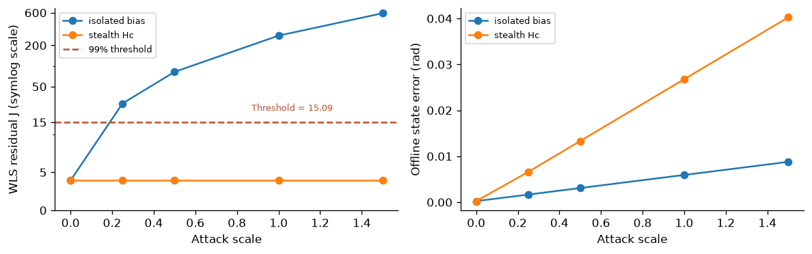
Executed L8 sweep. Left: detector-visible residual. Right: offline state error using synthetic truth.
Coordinated residual J stays near 3.92022
Isolated scale-1 residual J is about 277.497
Threshold is 15.0863
The right-hand error curve uses offline truth
Use the plotted default outputs to connect the cancellation to a visible result. The coordinated case preserves a residual energy of approximately 3.92022 across the tested scales, below the threshold of 15.0863, while its offline state error grows. The isolated scale-one case has residual energy around 277.497 and exceeds the threshold. The residual axis uses a symmetric-log presentation to retain detail near the threshold and at larger values; read the tick labels carefully. These are outcomes of the controlled fixture, not estimates of field detection rates. Ask participants to explain why adding another prose interpretation of the flat curve cannot by itself reveal the hidden displacement.
Introduce the trust assumption before the optimization. The fixture provides three additional angle readings explicitly assumed protected; neither the estimator nor the LLM establishes that protection. From their estimate, a scalar quadratic program chooses added injection at node two, balanced at the source. The objective minimizes corrective effort, and the branch-flow constraints include a 0.01 p.u. planning margin. This is a standard constrained model-based response, not an MPC rollout or trained SAC action in this case. The hard bounds and trust basis remain visible in the returned record. Ask learners why changing only the prose label from suspicious to trusted would not justify this calculation.
Next: Three independent readings remove redundancy
SLIDE 100 · C12
Three independent readings remove redundancy
A full-rank estimate can still lack a residual consistency test.
rank(HT)=3,mT−n=3−3=0
HTMeasurement matrix for the protected subset
mT,nProtected measurement count and state dimension
Three protected angle readings
Three unknown state variables
Rank 3 permits estimation
Residual degrees of freedom: zero
Pause on a subtle consequence of the protected-channel fixture. Three independent angle readings can identify the three unknown state variables, but they leave no residual degrees of freedom. The estimate exists because of rank, while the trust in those readings remains an external assumption. Do not describe zero residual as confirmation that the protected readings are correct. This is an excellent example of why observability, redundancy and authenticity should be taught separately. Ask the audience how they would strengthen the evidence in a real system: authenticated channels, independent measurements, validated sensor health and appropriate threat assumptions are distinct contributions. In this tutorial, unavailable protected information leads to HOLD rather than an invented trusted state.
Discussion
Does full rank imply enough redundancy to test consistency?
Expected observation: No. This exactly determined protected subset has zero residual degrees of freedom.
Protected available → constrained injection proposal
Inspect the stated trust assumption
Read both helper calls before showing the table. The first removes the protected-channel assumption and must return HOLD. The second enables the stated protected readings, solves the constrained recovery problem and reports an advisory candidate. This comparison teaches an information dependency, not a difference between a weak and a strong language model. The assertions in the full cell verify the expected hold behavior and the absence of offline actual violations in this fixed scenario. The offline check uses synthetic truth solely to evaluate the experiment. Ask learners what a control-room display should retain when it holds: the missing evidence, the reason for holding and a clear path for obtaining justified additional information.
Next: Lab: connect the new estimate to a physical consequence
SLIDE 102 · C14
Lab: connect the new estimate to a physical consequence
Explain the chain from information to command to branch flow.
Run L9
Check the 0.18 p.u. limit on branch 1–2
Inspect every other branch
Describe why protected information changes the action
Give learners five minutes to run L9 and compare the two information conditions. The useful causal chain is protected evidence changes the estimate, the estimate changes the constrained injection, and that injection changes the modeled physical flows. A label from an LLM is not the source of the new information. Have participants inspect all branches rather than stopping after the highlighted branch falls below its limit. The 0.01 p.u. planning margin is an engineering choice and is not calibrated as a probabilistic guarantee. If someone changes the fixture, the displayed reference numbers may no longer apply; they should report their newly calculated values and the assumptions behind them.
Experiment / prediction
What causes the improved physical outcome here?
Expected observation: The protected-state estimate and the constrained numerical control, under the stated assumptions.
Next: The control consequence makes the failure visible
SLIDE 103 · C15
The control consequence makes the failure visible
A plausible corrupted estimate can leave a real overload untreated.
Information basis
Injection u
Actual flow 1–2
Stealth-corrupted
0 p.u.
0.24000 p.u.
Assumed protected
0.12169 p.u.
0.17046 p.u.
Corrupted-state control: u = 0
Its actual branch 1–2 flow: 0.24000 p.u.
Protected-state control: u = 0.12169 p.u.
Its actual branch 1–2 flow: 0.17046 p.u.
Compare the two commands under the same known synthetic truth. Using the stealth-corrupted estimate leaves the corrective injection at zero and the highlighted actual branch flow at 0.24 p.u., above the 0.18 limit. Using the protected estimate gives approximately 0.12169 p.u. injection and 0.17046 p.u. actual flow on that branch. The slight difference from the planned tightened bound reflects the fixture's measurement noise. All other branch limits must also be checked. These actual-flow values are evaluation outcomes, not measurements secretly given to the operating gate. The result demonstrates the importance of the information basis and constrained controller; it does not establish a universal cyber-defense guarantee.
Discussion
Why is the actual-flow column labeled evaluation-only?
Next: Preserve uncertainty through all five stages
SLIDE 104 · C16
Preserve uncertainty through all five stages
The architecture should carry trust assumptions to the operator.
Completed teaching diagram.
Awareness: provenance, rank and residual evidence
Planning: WLS estimate and constrained QP action
Simulation and verification: predicted flows and binding
LLM optimizer: permitted refinement, public rationale or escalation
Animate the same five-stage structure used in the previous cases, but emphasize the changed numerical methods. Awareness records provenance and estimator diagnostics. Planning uses a WLS estimate and a scalar constrained QP. Simulation computes DC flows for the candidate. Verification checks trust-basis requirements, rank, action bounds, flow limits and evidence identity. The LLM optimizer may request a permitted numerical refinement and provide a public explanation, but cannot manufacture protected measurements. A new estimate or command triggers another numerical check. The operator packet retains the assumed trust basis and remaining limitations. This general architecture accommodates different domain solvers without requiring MPC or SAC to be used in every decision type.
Next: Recorded Llama refinement does not improve the final control
SLIDE 105 · C17
Recorded Llama refinement does not improve the final control
A numerical baseline remains the reference for claimed agentic benefits.
Archived cyber route
Final u
Recorded total
Fixed supervisor
0.12169 p.u.
0.0038 s
Llama supervisor
0.12169 p.u.
5.203 s
Planning reply: GENERATE_CANDIDATES · 0.829 s
TRUSTED_QP refinement reply: 1.195 s
Fixed and Llama routes select u = 0.12169 p.u.
Recorded totals: fixed 0.0038 s; Llama 5.203 s
The archived cyber-stealth workflow is inspected in L10, separately from the fresh L8 and L9 calculations. Its actual planning response asks for new candidates based on the given tools and objective. A later optimizer reply chooses TRUSTED_QP and requests new simulation and verification. The public response is useful because its proposed operation and stated justification can be checked. However, the fixed and Llama routes finish with the same constrained injection and objective. Their recorded total times differ substantially because the Llama route makes four model calls. These are single-run measurements, not a distributional benchmark. The example demonstrates reviewable orchestration and the need for numerical checks, not improved attack detection or lower control cost from the language layer.
Discussion
Actual planning reply: “Requesting new candidates based on the given tools and objective.”
Expected observation: Inspect the returned candidate and fresh numerical evidence before accepting the explanation.
Next: Three cases, three different failure boundaries
SLIDE 106 · C18
Three cases, three different failure boundaries
A common workflow manages evidence; each use case still needs its own physics.
Case
Failure boundary
Evidence response
Voltage
Omitted constraints
Broader-model audit
Restoration
Stale recommendation
Fresh case-bound solve
Cyber
Consistent wrong state
Justified trusted source / HOLD
Voltage: reduced scope can omit binding limits
Restoration: changed conditions invalidate an old plan
Cyber: consistent data can describe the wrong state
Common response: justified tools, fresh checks and operator review
Give participants a minute to write one sentence for each case. Voltage support showed that a reduced-model PASS may fail a broader physical audit. Restoration showed that priority policy changes service tradeoffs and that a changed capacity invalidates old evidence. Cyber response showed that a model-consistent perturbation can preserve residuals while changing the estimated state. The common framework keeps requests explicit, selects appropriate numerical methods, records their outputs, verifies changed proposals and carries limitations to a human reviewer. It does not create physical information by adding language agents. The final research discussion should ask when learned orchestration improves task success enough to justify its latency, complexity and additional failure modes.
Discussion
Which stage would you strengthen first for each failure boundary?
Measure the workflow and the electrical outcome separately.
Study completed?
Constraints passed?
Claims supported?
Operator decision improved?
Ask learners to answer this using one case they just ran. A study can finish while its candidate is infeasible. A rejected candidate can demonstrate a working gate while consuming time. A numerical improvement can come from a stronger optimizer rather than the LLM. Put those observations in different columns. The tutorial establishes an executable learning workflow with visible intermediate decisions; it does not yet establish a benefit in a utility control room. Invite the audience to name the smallest extra experiment needed for their preferred claim. A claim about staff workload requires participants and a workload measure. A claim about electrical feasibility requires a stated model, operating limits and test scenarios. Transition: make the comparison fair before interpreting any score.
Discussion
Which claim is supported by a low cost and a fluent explanation?
Expected observation: Only the measured cost is established; feasibility and explanation support require separate evidence.
Give every method the same physical constraints and verification budget.
ppass=N1i=1∑N1[g(xi,ui)≤0]
Nnumber of evaluated cases
gvector of checked constraint violations
1[⋅]one when every listed constraint passes
icase index
xievaluated state in case i
uicandidate control in case i
Same case and admissible actions
Same candidate trial budget
Same final verifier
Separate failures from feasible costs
Use the same demand realization, topology, operating limits, action bounds and final electrical check for a paired comparison. A method that sees more cases or gets extra simulations has received additional information or compute. Record that explicitly. The fixed baseline may use the same MPC, SAC policy and verifier as the agentic workflow; this isolates orchestration rather than changing the entire controller. Report the objective among feasible candidates and also report the failure fraction. An average objective that silently removes failed cases can favor a brittle method. In the held-out response pilot, all pool selectors paid for all three LLM calls. The learned selector therefore cannot claim the latency of only the chosen response. Transition: choose the ablation that answers the claim.
A useful ablation keeps the numerical tools fixed.
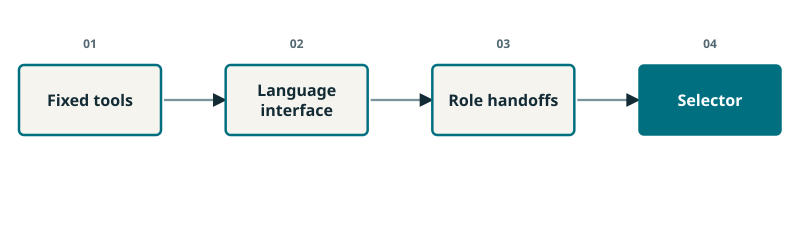
Completed teaching diagram.
Fixed numerical workflow
Add language interpretation
Add role-specific handoffs
Add vote or learned selection
Build the comparison from left to right. First establish a deterministic workflow that solves the engineering problem. Add language interpretation while preserving its tool contract. Then introduce specialist handoffs and measure whether they reduce malformed requests or unsupported reports on varied tasks. Finally compare selection rules under the same candidate pool and fresh-trial budget. This is a recommended experimental design, not a claim that every ablation was run in this package. The implemented pilot directly compares several response selectors and fixed numerical refinement; the real LangGraph exercise separately checks orchestration equivalence against direct Python. Keep those scopes visible. Ask which variant would isolate the value of retrieval or a checkpoint. Transition: a recent benchmark formalizes this separation between tools and scoring.
The final report should survive independent recomputation.
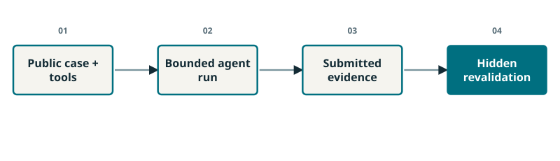
Completed teaching diagram.
✓ Public tools and fixed budgets
✓ Hidden physical revalidation
✓ Evidence-supported submissions
Scope: DC thermal pilot
PowerAgentBench-SS separates an agent-visible tool environment from hidden evaluation. Its instantiated pilot studies DC thermal contingency analysis, so it is useful here as an evaluation pattern rather than evidence for our voltage controller. For the classroom, draw a boundary around what the agent may observe and place the final scoring calculation outside it. Training feedback and selector features must not contain the held-out answer. A correct statement can still lack supporting evidence in the submitted trace, which is why claim support deserves its own measure. Have a learner point to the tool record supporting one numerical sentence in an operator report. If the record is absent, mark the sentence unsupported even if its value happens to be true. Transition: operating uncertainty is another dimension the workflow must expose.
The orchestrator can request a stronger study when uncertainty matters.
✓ Numerical engines remain explicit
✓ Uncertainty-aware study selection
✓ Corrective-dispatch tools
Measurement replay is not forecast validation
CONDUCTOR provides a recent example of language orchestration around numerical grid-analysis engines, including uncertainty-aware analysis. Its reported measurement replay must not be described as a forecast-performance experiment. Relate that distinction to our load-scale exercise: changing a scenario is a sensitivity study, while a probability claim needs a justified distribution and calibration. A useful extension is to provide a small declared scenario set, run the same candidate through every scenario, and summarize the observed margins. That extension is proposed here; it is not an experiment already contained in the saved classroom output. Ask what additional data would justify the chosen scenarios for a real feeder. Transition: uncertainty about the grid and authority to act are separate concerns.
Approval rules belong in the runtime, not only in the prompt.
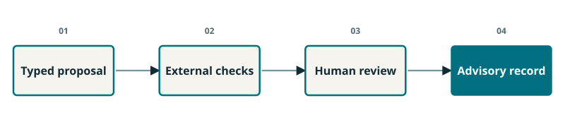
Completed teaching diagram.
✓ Whitelisted tools
✓ Explicit step budgets
✓ Typed numerical facts
✓ Review before side effects
The governance-aware TSO digital-twin paper uses an external control layer for tool permissions, budgets and approval. Its reported prototype distinguishes task success from compliance with those enforced rules. Bring that distinction into our notebook: a candidate can satisfy the advisory readback rule without becoming a field command. Conversely, a plausible language answer cannot make an unavailable permission appear. Draw the authorized path through the review gate and show the attempted bypass ending at HOLD. This is an architectural lesson, not a claim of production certification. Ask learners to identify which checks run outside the language model in L12. The answer includes candidate identity, evidence binding and required model scope. Transition: now test what the existing experiments actually support.
Run the complete L11 cell after the earlier engineering cells. Its default branch prints that no new model call occurred. The optional path requires RUN_LOCAL_LLAMA=True in L0 and a prepared local Ollama service containing llama3.1:8b. It asks for a choice from the bounded catalog on the original test_01 context, then writes the actual response to a new journal. Do not silently apply that response to a modified classroom case. The quoted public reason comes from the separate 17 October validation and is a saved actual output, not a new live response generated by these slides. It proposes reducing reactive effort and uses cautious language about possible cost improvement. A fresh numerical trial is still required. Transition: inspect where the measured call spent its time.
Discussion
Recorded Llama reason: “has the potential to reduce reactive effort magnitude by ten percent, which may improve the cost.”
Expected observation: The 17 October validation chose RELAX_Q_10_PERCENT. Test it before accepting it.
Report loading, prompt processing and generation separately.
Measured component
Seconds
Load
16.967
Prompt
15.192
Generate
1.916
Other client time
0.038
Load: 16.967 s
Prompt: 15.192 s
Generation: 1.916 s
Client elapsed: 34.113 s
This is the saved actual Llama 3.1 8B call from the optional classroom validation, not a new call made by the slide. Ollama reports its loading, prompt-processing and generation durations; the client timer includes the complete request. Small differences include server and transport overhead, so do not force the components to equal the client total exactly. The response chose RELAX_Q_10_PERCENT on the original test_01 context and requested a newly checked trial; it did not certify that future trial. Warm loading, prompt length and hardware can change latency substantially. Ask the audience whether this call belongs in a subsecond control loop or an advisory study. A deadline claim would require repeated end-to-end measurements, including failures and fallback. Transition: present this evidence in an operator-facing packet.
Next: Place the assistant beside the control-room tools
Control room
SLIDE 115 · O01
Place the assistant beside the control-room tools
The tutorial is an advisory sandbox with an explicit human boundary.
Conceptual AI-generated illustration, not a utility facility or deployed system.
Existing operational data interfaces
Sandboxed numerical studies
Evidence-backed recommendation
Authorized operator procedure
Follow the data path from the existing operational applications to a read-only study context, then through numerical candidates and verification to a reviewable recommendation. This is a deployment concept. The notebooks use a synthetic feeder and teaching cases; they do not connect to a live control system. The diagram should make the human review point prominent without suggesting that a dashboard alone establishes useful human oversight. An operator needs the relevant evidence at the right time and must be able to reject or request clarification. Ask which information belongs in a structured field rather than generated prose: equipment identifiers, limits, model scope and candidate identity are strong examples. Transition: open one packet and inspect its information hierarchy.
Lead with action, scope, margins and unresolved issues.
Packet field
Full MV/LV request
Explicit MV teaching request
Verified scope
MV phases only
MV phases only
Scope matches
No
Yes
State
HOLD
READY_FOR_READBACK
Acknowledged
False
True
Equipment dispatch
False
False
What action and candidate ID?
Which model and data revision?
What passed, failed or remains unknown?
What acknowledgment is required?
Present the action and its identity first, then the supporting evidence. A reviewer should not have to reconstruct the proposal from a long chat transcript. Include the requested and verified model scope, the age of the evidence, numerical constraint margins, rejected alternatives and a concise public rationale tied to tool results. In this tutorial the most consequential scope distinction is the MV-only result versus the broader MV/LV requirement. A polished summary cannot silently expand that scope. Invite learners to remove one field and predict the resulting ambiguity. Removing the identifier obscures which candidate was reviewed; removing the scope can turn a valid limited statement into an unsupported general claim. Transition: acknowledgment changes a specific state, not the physical network.
Discussion
Both packets refer to b67cff9c8eb444c2. What changes the result?
Expected observation: The requested scope must match the verified scope; the recorded readback remains advisory.
Only a matching, eligible packet can be acknowledged.
Completed teaching diagram.
Proposed → checked
Checked → awaiting review
Matching readback → acknowledged
Scope or identity failure → HOLD
Animate the review path one state at a time. The conceptual sequence distinguishes calculation, review readiness and human acknowledgment. In the implementation, a full MV/LV request supported only by an MV result is held; an explicitly limited MV teaching request can become eligible for acknowledgment. The candidate identifier binds the readback to a particular packet. Emphasize that these are advisory application states. They neither authenticate a real operator nor dispatch equipment. The earlier LangGraph G5 exercise demonstrated interruption and resumption using a checkpoint, while L12 demonstrates the engineering packet checks. They teach related ideas through separate code paths. Ask the audience to identify which failure should stop the path before any readback is accepted. Transition: inspect the exact L12 statements.
Read these two notebook lines aloud. The first call deliberately supplies the wrong recommendation identifier. The second uses the identifier carried by the eligible MV teaching packet. Both calls go to ordinary Python logic, so the readback rule is inspectable independently of language-model output. The string Student operator is an instructional placeholder rather than an authentication mechanism. Keep the previously constructed packet visible: it records what was checked and under which scope. This exact excerpt comes from L12 of Classroom_Labs, and learners should run L0–L5 first so the selected-trial context exists. Ask them to predict the two outcomes before running the cell. Transition: run the full packet exercise, then inspect its assertions.
Use L12 to distinguish scope, identity and acknowledgment.
Run L12 after its earlier cells
Find the full-scope HOLD
Inspect the wrong-ID rejection
Confirm no equipment dispatch
Give learners four minutes and keep this slide visible. First run the unmodified L12 cell after the earlier classroom cells. Inspect the displayed packet for the full MV/LV requirement and compare it with the explicitly MV teaching packet. Then inspect wrong_id in a scratch cell; it is intentionally not the accepted readback. Finally check the three assertions at the end of L12. Have partners explain the difference between an eligible packet and an acknowledged packet. Avoid changing the original assertion expectations during the first run. For an extension, discuss which fields would change if the requested control changed and which evidence would need to be recomputed. This is a local advisory exercise; the notebook has no equipment-dispatch endpoint. Transition: compare the predicted outcomes with the executed checks.
Experiment / prediction
Which of the three outcomes is permission to dispatch equipment?
Expected observation: None. Even the acknowledged packet is explicitly advisory.
Exact excerpt: Classroom_Labs.ipynb, L12, lines 13–15. Run the complete cell in context.
assert full_scope['state'] == 'HOLD' and not full_scope['acknowledged']
assert wrong_id['acknowledgment_result'] == 'REJECTED'
assert readback['acknowledged'] and not readback['equipment_dispatch']
Full MV/LV requirement: HOLD
Wrong identifier: REJECTED
Matching MV readback: acknowledged
equipment_dispatch: false
Show the assertions after learners have made their predictions. They are deliberately more precise than an all-purpose PASS label. The full-scope packet is held because the supporting model is narrower than the request. The wrong identifier is rejected because it does not name the current packet. The eligible MV packet can be acknowledged, yet its equipment-dispatch flag remains false. These outcomes demonstrate the logic of the teaching application, not authentication, field authorization or human comprehension. Ask a participant to explain why the first failure cannot be repaired by entering the right identifier. It requires suitable evidence for the requested scope or an explicitly changed request, followed by the corresponding review. Transition: examine what happens when the underlying request changes.
A hash links content; it does not establish physical truth.
Change a limit or candidate
Old binding no longer matches
Recompute the affected study
Review the new packet
Connect this question to L1 and L7, where the classroom explicitly checks stale bindings after a request or candidate changes. The binding helps detect a mismatch between saved evidence and its stated inputs. It does not prove that a sensor is trustworthy, that a model is correct or that an operator is authorized. Ask learners to identify the smallest changed field that should invalidate the old check: a current limit, load scale, topology revision or control setting all provide concrete examples. Their answer should include the affected numerical step, not only a request for a new language explanation. The important habit is to preserve evidence provenance through revision. Transition: apply this habit to three operator decision cards.
Discussion
Can the old acknowledgment survive a changed control?
Expected observation: The changed candidate needs new checks and a new matching review record.
Next: Capstone: approve review, hold or request a study?
SLIDE 122 · O08
Capstone: approve review, hold or request a study?
Name the missing evidence and the next responsible step.
A: MV PASS; full-feeder AC FAIL
B: restoration PASS; isolation record absent
C: no alarm; protected measurements absent
Give each group one card and ask for a decision plus a concrete next step. Card A requires repair or another study at the requested model scope; a confident Llama sentence cannot override the AC failure. Card B exposes a missing operational prerequisite: a feasible mathematical switching plan is not proof of authorized isolation. Card C exposes incomplete information: an unalarmed residual alone cannot establish trustworthy state estimation under the constructed stealth attack. In each response, separate the numerical tool that can help from the authority or external evidence that the tool cannot invent. Do not assume that retaining an old setting is always safe after a changed topology or measurement regime. Use the final minute to compare the three different gaps. Transition: summarize how all five stages contribute.
Discussion
For your card, identify one missing fact and the next tool or human step.
Next: Five stages, three cases, one evidence discipline
Synthesis
SLIDE 123 · S01
Five stages, three cases, one evidence discipline
Each stage contributes a method and a checkable output.
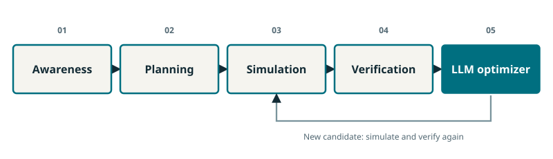
Completed teaching diagram.
Awareness: establish the study context
Planning: generate admissible candidates
Simulation + verification: test and accept
Optimizer: refine; operator: review
Invite one learner per use case to trace a single candidate through the five proposed stages. Awareness establishes measurements, constraints and model scope. Planning calls the relevant numerical formulation. Simulation computes the consequence of candidate controls; verification checks the declared requirements and binds the result. The optimizer can request a bounded refinement or retain an incumbent, after which the relevant evidence is checked again. Human review is the subsequent authority boundary, not a sixth language agent. For voltage this includes MPC and SAC candidate comparison; restoration uses a weighted service formulation; cyber response distinguishes estimation evidence from protected-information assumptions. The methods change while the handoff discipline remains. Transition: choose how much orchestration the task actually requires.
Add an agent only when it addresses a measured task need.
Repeated calculation → fixed workflow
Varied requests → typed LLM interface
Independent studies → specialist coordination
Consequential recommendation → enforced review
Treat this as a design decision rather than a contest between labels. A stable calculation with known inputs can be well served by a fixed workflow. Language interpretation becomes useful when users express varied requests, but the resulting tool calls still need validation. Specialist coordination can help when responsibilities and evidence streams differ; it also adds communication overhead and potential handoff failures. Recent agent-scaling research motivates testing that tradeoff instead of assuming that a larger team is better. The classroom direct-Python and LangGraph comparison is deliberately equivalent on its toy cases: orchestration structure alone should not change the mathematics. Ask participants which part of their own workflow is currently variable or error-prone. Transition: preserve enough information to make that improvement measurable.
Archive the inputs, methods, outputs and evidence mode together.
Case, model scope and data revision
Solver, policy and LLM versions
Seeds, budgets and measured durations
Fresh, archived or optional-live label
Use this checklist to prepare a reproducible scientific report, not a new permission process. The code cells already distinguish fresh numerical calculations, inference from saved SAC weights and archived actual LLM responses. The optional local Llama call is disabled by default, and its saved validation record includes a timestamp and timing fields. A screenshot of an answer is weaker than the structured record that identifies its request, model and tool results. Include failures and rejected alternatives where they affect interpretation. For the selector pilot, preserve the training, validation and held-out split and state that test-time learning was frozen. Ask learners to locate one such field in the supplied outputs. Transition: turn the remaining limitations into a clear next experiment.
Change one factor and state what would falsify your claim.
Hypothesis: name the expected benefit
Control: retain a strong fixed baseline
Measure: outcome, failures and latency
Boundary: state the model and task scope
Ask every participant to write one sentence of the form: adding this mechanism improves this measurable outcome under these conditions. Good candidates include fewer stale-evidence reports, more correct tool selection for varied language requests, or a better tradeoff between objective and computation under a fixed trial budget. A weak hypothesis simply says that agentic AI is better. Require a baseline that can plausibly win and a condition under which the proposed benefit would not be supported. Suggest a held-out scenario split rather than retuning after viewing every result. If the claim concerns operator workload, the next experiment needs a human study rather than another simulation plot. Transition: use the exit ticket to show what you can explain and run now.
Experiment / prediction
Write one testable benefit and one result that would refute it.
Expected observation: Example: fewer unsupported reports at equal tool budget; equal or higher unsupported-report rate refutes the claimed benefit.
Connect one concept, one cell and one observed result.
Explain a DAG versus a bounded cycle
Name a model-based and model-free method
Interpret one failed candidate correctly
Identify the operator acknowledgment boundary
Allow three minutes for an individual response followed by a brief exchange with a neighbor. Each learner should cite one notebook checkpoint and one actual observed result. For the graph question, a DAG has no directed cycle, while the implemented repair loop is a bounded cyclic state graph. MPC uses an explicit model during planning; the trained SAC policy supplies a continuous candidate from its learned mapping, and that action is still checked in a simulator. A failed candidate is neither proof that the entire framework failed nor proof of safety by itself; explain what the gate prevented and what remained unresolved. Finally identify why acknowledgment in the teaching dashboard does not dispatch equipment. Transition: return to the operator question that opened the tutorial.
Discussion
Which checkpoint would you show a colleague to explain the framework?
Expected observation: Choose a checkpoint and support the explanation with its exact inputs, output and stated limitation.
Agentic assistance earns trust through useful tools, explicit evidence and accountable decisions.
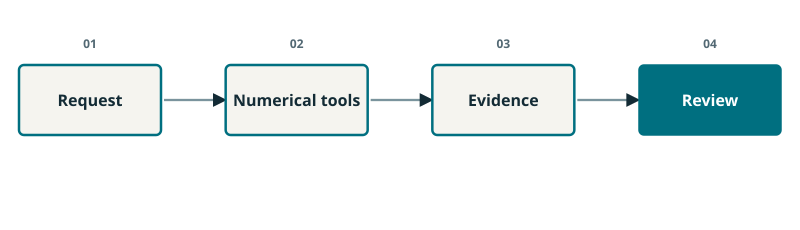
Completed teaching diagram.
Language expresses the task
Numerical methods produce candidates
Checks determine what is supported
People retain the review boundary
Close by asking the audience to describe the entire process in one sentence without using the word intelligent. A suitable description names the request, the numerical computation, the evidence checks and the operator review. The three cases have demonstrated different engineering formulations inside a shared orchestration pattern. They have also shown where a fixed method ties or beats a learned selector, where a reduced model misses full-feeder violations, and where a quiet residual is insufficient evidence. Those limits make the tutorial scientifically useful. Direct learners to the integrated handout for the symbol definitions, exact code references, exercise answers and citations, and to the Slidev source for the animated teaching sequence. The next step is a focused experiment on a clearly defined workflow need.